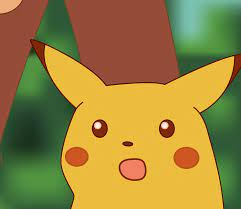

JO
JoeSteeloak
2022-02-13 09:48 UTC
#1
It has been foretold!
It has been foretold!
Very excited about this.  This could be a turning point for me.
This could be a turning point for me.
This could be a turning point for me.
Changing your name to TookRunner?
Turning point, how so?
Awesome! Can’t wait for the news!
Cool as the base game is, I think I’m looking more forward to this expansion. The Dark Watch team and their villains are my favorite characters, and I can’t wait to see some of their sorely needed rebalances, as well as any brand new content.
I can’t wait to see what gets done with Nightmist and Expatriette.
This is the thing I have been waiting for. Expatreitte is one of my favorite characters in the game, and I can’t wait to see her fine-tuned. And finally poor Gloomweaver will get the love and care he deserves.
I’m also curious to see if my prediction that Fixer is going to become a master of the Reaction mechanic is true.
Also, just because we can…
Theories/things we know (assuming it will be 12/6/6 again, which we may have heard differently)
Heroes (12 heroes)
Dark Watch Team
I’ve heard there is supposed to be a new hero, but I’m two years behind on the podcast (December 2019 currently) so I don’t know who people are predicting.
The Scholar He plays a big mentor role to Expat and a few of the others, so he makes some sense here.
Parse (she makes a lot of sense starting in Rook City, considering her brutal nature. Probably not a lot of changes)
Visionary (Would make sense, Project Cocoon, Dreamer, ect)
Hmmm… at this point I’m looking at the list of heroes and realizing that with 5 releases, this is unlikely to be 12 heroes per box (there are only 10 left for 4 boxes if everything on my list makes it), so I’ll leave these as the most likely candidates
Villains (6 villains)
Chairman/Operative (I noticed this with Voss, but there were fewer copies of “minion” in his deck. I wonder if they will go the same way with Chairman. They don’t need to change him, but removing some of the mooks could give room to add more environment manipulation and a few more ongoings. I wonder if they’d do a base card, like a gang hideout? No solid ideas here)Critical Event? Operative takes over?
Plague Rat ( Probably reworking the infection mechanic. Could possibly add a “Rat-beast hero” card, since we’ve never gotten that feel of the infection actually creating more monsters. Otherwise he’s pretty solid? Maybe the Rat Beasts infesting the city is more an event or critical event?)
Spite (YAS, rework of Spite. YAS!! Please, he’s a pain point in the game and seeing him redone will likely make a world of difference. I imagine a big change will be them finding ways to make rescuing the civilians a good strategy. Critical Event would logically be Gloom Spite)
Gloomweaver (Another really hype rework. With the Critical Event being Skinwalker I bet. I don’t even want to make predictions I am just ready for it.)
Kismet (We have Setback, so his nemesis makes sense here. Likely getting an overhaul)
The Dreamer (She was a rook city event, considering she lived in a Rook City suburb. No idea what they would change specifically, but I imagine she is getting a bit of a rework since her flip side ended up usually not being terribly exciting, if memory serves)
Since we are looking at needing more villains and environments for fewer heroes…
Ambuscade (Makes some good sense as an urban bounty hunter. Traps would get a rework definitely, possibly end up more like Mad Bomber Blade)
Miss Information (She is defeated in Pike Industrial, so this fits here)
Apostate or the Ennead could also work, considering how much magic is floating around.
Environments (6 environments)
But, bonus prediction… I bet we get a new environment we’ve never seen before.
I’m excited to learn more about the 5 new decks we’re getting. : )
6 heroes, 9 villains are the numbers I heard.
6 heroes: Dark Watch + a new one confirmed (I have never been so sure of something unconfirmed in my life as the fact that we will get Alpha the Wolfwoman as the sixth hero)
9 Villains: Gloomweaver (confirmed), Spite, Chairman, Plague Rat, Kismet (no brainers). We will probably see between 1 and 3 new ones with Zhu Long, Chaos Witch, and Apex all looking very likely. Ambuscade, Apostate or Ennead might be the last one.
Environments except Pike and Rook City might be more of a toss up.
There’s one new Villain that I’m fairly certain none of us know anything about . . .
Okay, so if we want to have the same number of decks (24) then we would need 9 environments
If we have Gloomweaver and Nightmist and Harpy, then I think we have to have the Realm of Discord.
If we get a Zhu Long deck (I’m not convinced, but maybe something in the Letter’s Page I haven’t heard gives more credence to that) then I’d guarantee the Temple is an environment.
The issue I’m running into is that we know a lot of this stuff has to come in later expansions. For example, anything space related has to be saved for a Cosmic expansion, and we have a lot of time stuff that I feel like has to be its own thing (I think they were confirmed calling that box Disparation?) .
I wouldn’t be surprised that Vengeance mode is its own expansion, likely with few or no heroes so that they can put all 15 Vengeance style decks in one box. And then the last expansion is Oblivaeon, which in terms of heroes would see us get Luminary, Commadora, Lifeline, and the other “heroes” who only came about to face Oblivaeon.
Which gives magic stuff not really a good home, UNLESS it fits into Rook City… Which is why I want to put the Ennead, The Tomb, Apostate and a few other things directly into this box, even if I’m not sure they really “fit” well.
Doh, your are right. Realm of discord is a given
How would you know if none of us knows anything about it? 
I suppose it is somewhat arrogant of me to assume that merely since I know nothing about something, everyone else also knows nothing about it as well. I believe I am fairly up-to-date on most of the released lore, but it is always possible that one of you knows something I that I do not.
You lost me 
How do you know there will be a villain none of us knows anything about. Zhu Long, Apex, and Chaos Witch seems like strong contenders, but you think there is a secret number four on the way?
Also Nightmist and Diamond Manor is “in” Rook City so magic stuff fits perfectly in RCR.
True. Plus we’ve got the cult of gloom and a bunch of other magical things going on in the city, but I don’t know if we want to make it seem like Rook City is a magical city.
Sorry!
Okay, now I understand what you meant. I misinterpreted what you said earlier. Y’see, I’m a Playtester, so I know these kinds of things. I’ve probably already said more than I should have, though.
*Smoke Bombs*
While I would love getting 9 environments, I’m not super convinced they would include that many. While we would be getting fewer cards and fewer total decks, we’re also getting a ton of Hero Variants, Events and Critical Events. Each of the villains is probably getting at least 1 event and 1 critical, possibly more, along with some new events for a few base game villains. Each of the new heroes are getting 1st App. variants, along with their variants from the old game, along with old and new variants for them and base game heroes.
I’m partially hoping it’s Bal’Taranerach, after seeing him on AA’s card… but I just listened to the episode about his death, and they said something about him being an AA only villain, which is a bit sad.
It seems unlikely that we’ll ever get any form of Teranerach in the Card Game. Before becoming Bael’Tereanarach, he/it is not powerful enough to be notable. And after it becomes Bel’Terenearach, Anthony Drake pretty hastily seals it away, and it’s not seen for the rest of the Multiverse Era.
That is entirely fair, I hadn’t considered how that may change the deck math
Yeah, that was my thought.
Though, I do want to say, using him on Polyphoric flare makes me like that card thematically a lot more. I never really got AA hurting himself to use powers (and I never really felt the need to play the card) but in terms of “no, he literally sacrificed the fact of his existence to stop this threat to reality” I love it.
I had a theory on the 6th hero-
What about The Southwest Sentinels? By some definitions they are “urban and street level” and Writhe + Idealist have darker back stories.
There was the one story where the Organization tried expanding into the Southwest lead by an underboss who had turn himself into a kill switch bomb. That would be an obvious critical event.
If we get a hero or villain that never had a deck before do we think they will tell us on day one of the kickstarter or as a latter reveal?
Well Christopher has already revealed that it will be a new hero.
I would definitely call SWS street level but they are very clearly not Rook City 
Oooh, yeah I am sorry for being unclear.
So there actually might be a 4th one we haven’t thought of yet!
infrared eye piece activates
Hmmm…
Yeah, if we didn’t know there was going to be a brand-new, never-before seen hero, I’d be calling SW Sentinels, they’d fit the box pretty well.
As is, I’m thinking they end up in Disparation’s box, since that will be where La Capitan is.
What are the odds there’s a Revo-Corp environment? Would fit in well time-wise, and could have some interesting stuff. Although, it might get a bit too close to Pike Industrial Complex.
Diamond manor could also be sweet.
A Cult of Gloomy swamp would be cool too. C&A gave talked about one existing in multiple episodes dating back quite a while now.
Does anyone here know if the Kickstarter they used for the SotM: DE: Core Set will also be used for updates about Rook City Renegades?
Outside of a post pointing to RCR or other DE sets, I’d imagine updates would just go into the new KS. We will see soon how they do it.
Cool, I had not been paying enough attention to know that it was a never had a deck before character.
If it’s not Alpha, the Wolf Woman it had better be Sk8blayde!
I didn’t want to make a new topic for this, but I was reading some old comments in the Discord and it inspired in me another deck speculation for Expat and how she may work in the Definitive Edition. I’ll put it in spoilers just in case, since I’m going to be more specific in examples.
So, we definitely want Expat to have guns, and we want her to have ammo that effects these guns. This is prett defining for her. But loading specific ammo into specific guns… didn’t work so well. The card cost of doing so just doesn’t make for a synergistic design.
For example, If you have the shotgun, playing incendiary rounds gives you +1 damage, for one power… which means you basically played a card that says “deal 1 target 1 damage” which is a pretty bad card.
But, now we have items like the Wraith’s Smoke Bombs, which importantly destroy themselves at the start of the turn. So, what if the new Ammo items were something more like
Incendiary Rounds: Expat deals +1 damage. Start of Turn: Destroy this card.
Cryogenic Rounds: The first time Expat deals damage to a target on a turn, -1 damage dealt by that target until the start of Expat’s turn. Start of Turn: Destroy this card.
You could even mess with the destruction a bit. Maybe the Ammo cards are destroyed unless you discard a card, but then she also has an ongoing or item card that says you can ignore the start of turn effect of an ammo card, or that when an ammo card is destroyed you can summon an ammo card from your trash.
This does a few things. Firstly, this makes her ammo cards more useful. If she is using the Quick Response card to deal damage (by shooting) then she can play ammo and affect that, which is a cool combo that can allow her to be effective without needing to get a gun in play. This also allows her to feel like her ammo is more than a single bullet.
Additionally, this allows for multiple ammos to be used simultaneously, which could have some bizarre effects, but overall leads to her having a reason to play and interact with them.
Thoughts?
Beyond any of this, I imagine that collect, summon and discover are going to be common effects for her deck. Especially discover, considering how many times they’ve brought up that one of Expat’s things is putting ammo caches and gun caches… everywhere. I think it makes sense for her to have a lot of discover where she is basically looking around and saying “what did I leave nearby that I can use.” I don’t think she will do a lot of salvage, but maybe she will. I just wonder about her playing ability, but Salvaging makes a lot of sense.
This would be really cool, but destroying at the Start Phase is essentially the same as destroying when the power is used. Unless she is able to use multiple powers, which I don’t see being extremely common (but still present, of course).
I think it’d be cool if she had something more along the lines of “clips” or “magazines” that have multiple uses and attach to particular guns. So you could load a gun with incendiary rounds and get 3 or 4 uses out of it.
Cryogenic Rounds: The first time Expat deals damage to a target on a turn, -1 damage dealt by that target until the start of Expat’s turn. Start of Turn: Destroy this card.
This definitely wouldn’t work with what I proposed though… Effects like this do need to stick around. Maybe you could place tokens on them when they’re played (like Ritual Sanctum uses), and remove them for each instance of damage. Then, at the Start Phase, if there are no tokens you destroy the card.
Well, Expat does have multiple power uses in her deck. Pride and Prejudice are one famous example, but you also have her nuke card Unload, which allows her to use each gun in play.
Also, the idea was to allow her to additionally get the benefit from Ammo when she is using an Ongoing, like Quick Reflexes, which hits a target when it enters play. This was also the impetus for the Start of Turn, because, well, I want them to be closer in function her DW variant Aim power.
I could see a “clip” mechanic, but I think it would be very similar to Bunker’s DE mechanics, unless you did a token solution and I’m… I can’t say a token solution wouldn’t work, but but considering we lack sufficient tokens now, they would have to release new tokens with the box, and I can’t guarantee they will do that,
I sure hope we get more tokens! And I feel like it’s fairly likely we will with Harpy at the very least, so a few more shouldn’t be too crazy to expect.
It might also be cool if the Ammo were One-Shots/Ongoings that trigger a power upon being played. I could also see Quick Reflexes being a Reaction along the lines of “Play a card or use a power.”
Whatever happens, I’m excited to see her actually be fun to play!
Oh yeah, Expat has always been one of my favorites (I think it is just the art  ) but I’ve always known that she needs some love to make her deck engine run better.
) but I’ve always known that she needs some love to make her deck engine run better.
I don’t think they could be one-shots though, it could be interesting, that doesn’t feel right to me mechanically. Also, I think they would want them to remain Items.
Destroying at the Start phase instead of when the power is used has a few other advantages: the card sticks around to absorb Item destruction, or for Unity to turn into a bot.
Maybe I’m in the minority, but I didn’t have much issue with the ammo mechanics, as they are. My problem with Expat is her lack of extra draw/plays. Paired with a support like Argent Adept or Onmi-X and she’s great. But with just Dark Watch…
They could choose to leave them for sure, but… some of them end up being just really weak one-shots.
Shock Rounds and Cryo rounds are really the only two I can see playing even if I have another good option in my hand, but Hollow Points and Incendiary rounds are very much “I have nothing better to do”. And the idea behind loading a gun and not firing it is… odd. It assumes you are going to be firing a different gun, but why not put the ammo in that gun?
Also, I don’t think I’ve ever seen anyone actually load two ammo cards into Pride and Prejudice, unless it was on Wagner maybe. Because Pride and Prejudice is a great set of powers, and so you are likely to be using them again and again, which means they can’t stay loaded.
I’m not trying to say they are never useful, or that there isn’t advantages to them, but I see it as a clear place they could improve her deck engine, especially since the gun part is the more important part of her deck, and the part I’d least want to see changed (though, maybe making Pride and Prejudice a single card)
One thing I am looking forward to is Brian le Wolfhunt has YouTube videos where he discusses what he does not like about Expat and Spite and if they fix every issue he has I look forward to a video of him and Mr. Chomps doing a happy dance. Possibly one of those 1 hour loops some Tubers make.
Expatriette was one of a few characters I would actively discourage players from choosing. She was not fun, good, or well designed. I am convinced (even before the greatness that is DE) that Christopher can and will fix her so she can be the best she ever was. This expansion includes both in total and in percentage the most number of heroes in need of fixing so I can’t say if this makes me more excited than for DE, but at the very least just as.
I already asked him to do one on Captain Cosmic 
I never quite got all the criticism of Expatriette (and Mr. Fixer, for that matter). Both of them are generally reliable damage-dealers; usually not too flashy about it, but on par with core set EE heroes like, say, Tempest or Ra. And they each have a couple cool special effects. But both of them do have a card-draw reliance drawback: a bad draw can completely sideline that player, and I have seen things like Expatriette starts the game with a hand full of ammo, draws two, gets Reload and Speed Loading, next turn draws two, gets Unload and more ammo. That can be frustrating for sure, but it doesn’t happen all that often. Mostly I do find myself getting enough guns in play to do reliable damage to at least a couple targets, and then I spend my plays putting ammo in guns – sometimes the ones I’m planning to shoot that turn, and sometimes not.
So a “fix” for Expatriette might be as simple as making sure a few of her one-shots also Discover a gun, and making her power Discover ammo. Adding a couple multiple-powers-per-turn effects or Reaction power-use effects would really pump her up, and encourage players to use Load more frequently. I don’t really see them changing from her core mechanic of shooting guns, and using comic-book ammo to specialize the guns to the situation…unless what they’re doing is adding more special effect ammo types! (Let’s go, Gravity Ammo!)
Similar with Mr. Fixer, adding “Discover one Tool” to Tool Box would probably handle all his bad-draw cases.
I certainly would never discourage use of her, but her usefulness is heavily dependant on what she gets and what the situation is. Put her on a board with DR, and her submachine gun, and she isn’t doing anything, but if she had the shotgun instead, she is much better off.
And I know that is true of everyone to one degree or another, but… I think it comes down to powers and options.
Every hero in the base game has a base power that is fundamentally useful except for Absolute Zero. Maybe not specifically super useful, but they all do something that is generally harder to shut down. Expat’s base power is only as useful as what she draws.
And, once she is flush with cards… she doesn’t really have a lot of secondary options. The only thing I can think of that isn’t part of a direct dealing of damage is the RPG launcher, which I think I would put forth as one of her best cards. Everything else she does is damage, and the usefulness of that damage is dependant on the board state, and what she draws. Submachine gun is useful against a lot of foes… though generally I prefer the assault rifle for higher damage. Which is generally not as good as getting both Pride and Prejudice.
She really lacks a secondary role or set-up, and her primary is very dependent on something she can’t control. So, yeah, if you get what you need, she does quite good. But if you don’t… you just sit there. I’ve had plenty of games with Dark Watch Expat where the most useful thing I did was play Quick Reflexes and use my power, because everything else in my hand was useless. Compared to powerhouses like EE wraith or EE tempest, she certainly felt un-finished.
And actually, thinking about this… I really do want a few new guns. I don’t mind if we keep the ones we have, but I want her to have a sniper rifle. It is something she does so much of once she is Dark Watch, and I’m sure she did it a lot as normal. I’m also all for gravity ammo, or even seeing some things like those Eclipse bombs. I want to have her feel more tricky and less “I just want to get a big gun and fire it every turn.”
Then you’ll definitely be pleased with Expat’s DE upgrades.
Why gotta tease me? I’m already vibrating in place before hearing things like this.
I can’t speak for everyone, and Chaosmancer covered a lot, but here are my general issues with EE Expatriette.
First, as noted, she only really has two plays: ‘set up damage’ and ‘deal damage’. This isn’t necessarily a problem; Ra is essentially the same. But Expatriette is weirdly complicated given what the outcomes are, which narrows the range of people who like to play with her. IME, people who just want to hit things will gravitate towards less complicated decks, and people who like complicated things will gravitate towards decks with more options.
Expatriette’s second problem is that a huge potion of her deck is made up of cards that can be described as “cards from the core set, but worse”. SMG and Assault Rifle are both Grievous Hailstorm, but worse. Pride & Prejudice are Taiha, but worse. Flak Jacket is Synaptic Redirection, but worse. Reload is Decommissioned Hardware, but worse. All of her bullets are basically one-shots that are worse than what other people have access to, in exchange for the ability to be time-delayed by attaching them to a specific power. The result is that she just underperforms in general play.
Her final problem is the biggest, though. Her only card draw in her whole deck only lets her draw Pride or Prejudice. She has multiple effects that give her extra plays, but unless someone is constantly feeding her draws those effects become useless fast, and her bullets don’t do anything if she doesn’t draw a gun or it gets destroyed, with her ability to replenish smashed guns being almost nil. Even Speed Loading doesn’t actually let her draw ammo; it only puts it on top of her deck. The result is that instead of having a cycle of playing cards and then bursting damage, she builds up towards one burst and then slows down.
(My issue with Mr. Fixer is a quite different one, that being that he’s incredibly effective mechanically and I love using him as a team member when I play the video game, but he tends to settle into a single role and then just hit people over and over all game, so halfway through the game I’ve sort of stopped playing him and am more just automating him. He’s also a bit too fiddly for the folks that just want to settle into a single role and hit people over and over.)
I just realized, not sure if anyone posted this here? Good pic to raise the hype since we are looking at only a few more days
NDA’s be like that.
I just realized that the graffiti “Rook City Renegades” only has running paint on the “g” and it kinda bugs me, either more running or no running. NBD though.
The s also has some dripping paint if it helps.
And the k, but in black, very hard to see.
I think you nail all the major issues.
Expat is just too slow compared to everyone else. Specifically she needs cards that allow her to look for either specific cards and/or guns. Without that, she can have a lot of hard starts.
Mr. Fixer is too flexible. He can play nearly any role with the right set up. The problem as you mention is that once he is set up, nearly all of his cards are useless. I always felt each villain had an optimal build as far as which weapon and stance I should be using. The proble is that once I am there, my hand is usually worthless and I just repeat basic power over and over.
The major issues with most of the DW team is that so many of their decks felt limited. They all had essential cards (especially Nightmist) that needed to be out. Once out, their decisions felt very automated and uninteresting relative to the rest of the characters in the game. I am excited to see the changes.
The video for the KS got posted on Patreon https://www.patreon.com/posts/rook-city-63173811
So… now that it’s launched, and with how cagey A&C have been about the last hero (revealing at the end of the campaign, and all), I had a thought that I haven’t seen come up. What if the hero… is Guise?
It never came up since they confirmed it will be a new hero
The fact that we’re gonna know what all those blanks are by the end of the month has me seriously jazzed up!
Woo! The Kickstarter got three-times its goal in the first day! Great job, everyone. : D
Also, Trevor’s promotional video on the Kickstarter’s page is really awesome.
Oh, oops. I forgot that when I got my “wait…what if” thought.
Wow, so many redacted things. And Christopher said on the podcast today that at least one of the characters (“well, thing; not really a character”) is something that “nobody even knows exists in Sentinel Comics.”
The Suddenly! mechanic lets them handle the Monster of Id and The Abyss Stares Back with a single keyword, but it’s interesting they thought they would reuse that mechanic enough to make the keyword worthwhile! I can definitely see how it fits into The Harpy.
I was just thinking to myself how – if the theory that Hero #6 is Alpha is correct – you would make a werewolf character feel different from The Naturalist. And I think they’ve sort of answered that question! You have cards that check for werewolf form, but then you scatter the deck with Suddenly! cards that summon the werewolf card.
I just realized how perfectly Suddenly! could help Expat’s ammo… probably not on the cards, but an ongoing that gives the keyword to all of the ammo.
Anyone want to engage in rampant speculation about the six core hero variants? Got nearly an entire month to wait!
I’d say Rook City Wraith (maybe with a tweaked power) is a shoo-in.
Probably also Young Legacy, since we’ve already had the Thorathian Invasion and now Nightmist has banished Voss to Ur-space.
I could see Ra-Horus if a redacted villain turns out to be the Ennead.
I kind of doubt Termi-Nation Bunker, Unity, and Absolute Zero as this set just doesn’t feel right to me for introducing Chokepoint or Fort Adamant.
So I’m at a loss for who else it could be. Any ideas?
If Apostate shows up, this would be the right place for Redeemer Fanatic.
Aside from that, I’m guessing at least one entitely new hero card for someone who had fewer variants before.
I would like Prime Wardens variants, but that might be too soon.
I’m praying that Young Legacy gets her own deck (probably not in this set, but eventually) instead of just being a variant. She seems like a big enough hero to justify it.
I think Super Scientific Tachyon might be quite likely.
We could also see some new variants, like Bloodless Wraith or Haunted Fanatic.
My biggest theory so far is that we have the Ennead as a Redacted, and end up with Horus Ra. Then we have the Prime Warden variants.
Of course, that discounts Rook City Wraith, which seems too likely. So, if we have Horus and RC Wraith, then we can’t do a full team. At that point, Young Legacy seems likely. If we have Apostate then we get Redeemer Fanatic (Who I just realized… she would need a different power for her new mechanics, wouldn’t she?). Throw in Super Scientific and that makes 5.
It is also possible to get entirely new variants, like the Haunted Fanatic.
The biggest stumbling block is that the majority of variants don’t quite make sense in this set.
Freedom Six is a disparation set
Xtreme is a disparation set
Greatest Legacy, GI Bunker and Eternal Haka are a disparation set
It feels too early for Termi-nation (especially without Choke Point)
It feels too early for the Freedom Five set
WAY too early for Setting Sun Ra, Requital Cosmic, or Dark Conductor Adept
And that’s… ALL of the variants for these characters
I don’t know who said it, but someone pointed out there won’t be enough spinners for Ennead. They seem much more likely in a set where we get more spinner, rather than the one more villain spinner (which is undoubtedly because Chairman and Operative will be here). I believe a playtester also said there won’t be Apostate at all?
My guess is that most variants will either be new, or team versions of heroes (Freedom 5, Prime Warden, etc.). It is unlikely there will be a perfect 1 to 1 comparison from EE to DE variants, and I think I prefer it that way.
Actually, isn’t Apostate behind the Fall of the Prime Wardens? So if he’s around and we already have the Ruins of Atlantis that they used as a base, we could see their team costumes. That would leave just 1/6 though. If we’re going to see some form of all the pre-released variants again along with new ones, they’re going to have to cram in the following expansions!
Sounds like a lie straight from the mouth of Apostate himself!
I was briefly annoyed at the new mechanic, because it just felt wrong that the “core” heroes wouldn’t have an entire type of card in their decks.
Then I thought about WHO gets the “Suddenly” cards: Harpy and Setback. The ones with unstable or unpredictable powers. The F5 and PW are many things, but unstable is not a word I would use to describe their power sets (not even Ra and Unity). I can also see that being used for later heroes like Luminary (representing hidden plans) and Stuntman (because he’s the kind of attention stealing guy to use that sort of thing).
Expat: Speed Loading - Ongoing. Ammo cards gain the Suddenly! keyword.
With the general easing of bookkeeping in DE, I wouldn’t be surprised if the Ennead gets a rework to not need so many spinners.
Yeah, if we discount emotionally unstable (Sorry Prime Wardens but… you can be a mess) then the only possible one I could think of from the Core Set would be Argent Adept, since he spends so much time not knowing what he is doing and messing up… but that’s not how he is presented the majority of the time, and all of his bad decisions come up to haunt him towards the end and in the RPG timeline.
[quote="OddballPaladin, post:74, topic:29094] With the general easing of bookkeeping in DE, I wouldn’t be surprised if the Ennead gets a rework to not need so many spinners. [/quote]
I don’t know. I think the Ennead really worked well as Nine Targets, I’d be a bit frustrated if they dropped that entirely. Then again, you never faced the Full Might of the Ennead unless you let it happen, and with the new set-up design, you could have them as massive HP targets in their own deck with the base card representing their background plans.
And, Voss shows us that they don’t feel like 20 HP targets need spinners, because of his fleet, and most of the Ennead are only 25 to 30? It isn’t unreasonable to have them not use the spinners at all.
True enough. I imagine whatever they end up using for the Ennead will also be used for the team-style villains.
Something I wonder about Suddenly! cards is if “cannot play cards” prevents them from auto playing. And if they then auto-play when that effect disappears.
They talk a lot in the Kickstarter description about fighting corruption, so I wonder if one of the villains will be something Miss Information-like. A Villain that is more about investigating and manipulating Hero -Villain-Environment interactions than about punching stuff.
In that case, Rook City Wraith makes a lot of sense even beyond the name and setting.
That’s Expat’s First Appearance where she hunted Wraith.
Yeah, interesting – previously we had that Expatriette’s first appearance was in Emigrant’s Song #1, not Mystery Comics, but that nemesis icon definitely matches Expatriette’s character card from the same image.
It was also something Adam showed off on an art stream (as something he’d already completed rather than one he was working on at the time). I’m sad that he didn’t save those on his Twitch channel for watching later, but I also don’t remember if that was in the era where he had non-copyright-friendly music going which could explain it.
I have a speculation of my own if anyone’s interested…
I’m going guess yes to the first part. There is no more “put into play” and “cannot play” means just that. For the second, I don’t know if you’d hold them or discard. If it was Enhanced Edition I’d say discard, akin to trying to play a second Limited card. But now those return to your hand, so I don’t know.
We live for speculation
My guess would be that we hold them, then play them once you can play cards.
However, we have yet to see a single “You cannot play cards” effect in the game, and they specifically removed at least two effects that did that and replaced them, so I find it unlikely that we will see that sort of effect.
Not impossible, but unlikely
Hey, good catch on the Expat first appearance. I’ll edit your comment to avoid confusion.
We can see the heroes new base powers in the Kickstarter video, and there’s some interesting stuff we can gleam from them.
Expatriette: Expatriette deals 1 target 2 projectile damage. You may play 1 item card.
Expat’s old base power was useless in most cases, due to her low card draw and that shooting your guns to deal damage was almost always better than setting up. This improves it in almost every way, giving you reliable damage even with no guns and letting you set up at the same time. Great change.
Mr. Fixer: Mr. Fixer deals 1 target 2 melee damage. You may collect 1 tool card.
Huge upgrade for Fixer here. More damage helps immensely when you have no tools/styles or are using the utility focused ones, and being able to collect tools guarantees you will have the best tool for the situation after the 1st turn at least (though hopefully the tools are more equal in power now so you’re not just grabbing the crowbars every single game). Also makes it a bit easier to design variants for Fixer, since a base power for him in EE HAS to deal damage while being equal strength-wise to “deal 1 target 1 damage”, and it seems the designers took advantage of that extra space since the update said Fixer has FOUR variants now!
Harpy: The Harpy deals 1 target 1 infernal damage. Either draw 2 cards or destroy a flock card.
Setback: Play the top card of your deck.
Since these characters no longer seem to use their respective token systems, it changes literally every card in their deck to the point I don’t feel comfortable speculating on what these mean. They’d be completely new decks compared to their EE counterparts.
Nightmist: Discard 1 card. Either draw 2 cards or play 1 Spell card.
Looks like Nightmist’s card draw is being reined in, but as compensation she can now play 2 spells a turn. Also might make her other powers more appealing, since most people rarely use the Tome in EE.
Exciting changes ahead. Can’t wait for more updates (though I do hope we see some card previews).
So we’re expecting at least 6 villains, and can be reasonably sure of Spite, Chairman, Rat, Gloomweaver, and probably Apex. Zhu Long is also a good possibility to become a full deck, since the podcast has outright said that he’s someone who could work as one. But I had one other outlandish possibility in mind: Progeny. It’s kinda premature since we’re only one set in, but even though he comes late in the Multiverse, Progeny is primarily known for wrecking Rook City and for fighting the three big hero teams that we have (four if you count the Setinels), with not a lot of interactions with any of the other heroes apart from KNYFE. So I think there’s a nonzero chance he might show up here.
The KS has confirmed 9 villains for RCR
There is a little more we can gleam from this as well, when comparing to Haka.
Haka’s base power is deal 2 damage. His Mere in the EE version was 2 damage and draw a card. DE version is 3 damage and draw a card. An absolute improvement over his base.
Expat’s guns are likely hitting harder or having other effects now, because Pride and Prejudice both just did 2 damage… which is objectively worse than her new base power. Likely Assault rifle which used to do three instances of 2 damage was also improved.
Looking over the Redacted release schedule, I’m placing my money on the two Redacted environments being Rook City Swamps (right after Spite), and my long shot option being the Fae Court (right after Harpy’s nemesis).
No Temple of Zhu Long, huh? Even after seeing a picture of Mr. Fixer’s resurrection in the update?
Say what? c.c I’m sorry, if that’s the case, all those people are wrong.
Ha, yeah, I use the Tome frequently as well! +1 card is a reasonable exchange for +2 cards plus self-damage.
Good point, that artwork is probably remaking the Resurrection Ritual…
Reading the update today, the Organization sounds like it is really leaning into the command structure thing. Sounds great! (Also, scary!)
But one thing made my head explode. Why would they create something and then say the phrase “each X” doesn’t apply to it?! I get mechanically why you wouldn’t want that deck played by some effects, but rules- and wording-wise, that strikes me as so immediately awkward. “Each” doesn’t mean each?! So much for the suggestion in the core rulebook that we answer rule questions at the table by reading the card aloud. 
Don’t worry Dil, you’re not alone! I play it less safe with Nightmist too, taking damage to get cards until I can start redirecting that damage with my Amulet.
I think trying to get relics is much more helpful than trying to get spells.
Wow! I’m surprised how many new mechanics we’re getting in this expansion. “Suddenly” cards and now Side decks! This is almost the level of stuff we’d see in Vengeance or OblivAeon, not a typical expansion in EE.
It’s cool how they’re expanding on one-off things in the old version of the game and including them in more decks. VG Mainstay’s Preemptive Punch became the basis for Reactions. VG Idealist’s Monster of Id being the original “Suddenly!” card. And now we have Side Decks, as an expansion and formalization of Kaargra’s Title deck and the Scion Deck.
Wonder what other side decks there’ll be, or if there are any meant to go with non-villain decks. Maybe this will be used to change some of the other multi-character decks, like the Ennead or the SW Sentinels. I guess we’ll see.
So is this just making the Operative objectively meaner? Sounds like no way to manipulate her deck or prevent her from doing what she’s gonna do! I mean, short of incapacitating her posthaste!
I think rules-wise, as long as it’s a cut-and-dry “never interact with this unless a card specifically says so”, it’ll be fine and won’t cause much confusion. There was a lot of weirdness with Kaargra’s Title Deck in EE (though much of that was due to it not having a trash, while Side Decks do), so having them be less interactive removes weird edge cases and makes cards more consistent between games that do and do not have Side Decks.
You can still reduce/prevent her damage, and she’s going to be dependent on the Chairman to play her own cards, so stopping/manipulating his plays can stop the Operative in turn. Hopefully having her own deck makes her more interesting than just having her hit you whenever you kill a thug.
“Each X” is a bit hacky, but it’s nowhere near as bad as the phrase which became the bane of my existence for a while during my MTG-playing days, “up to one target”. (Even worse, I believe I saw this at least once in SOTM, which didn’t have the excuse that justified MTG’s use of the phrase, where saying “you may Do Thing to target X” always required you to pick a target, then said you may Do Thing to that target, and thus caused problems when you had a creature that would kill itself if anything ever chose it as a target, and things of that nature. To my knowledge, no equivalent to this unfortunate consequence of the bizarrely convoluted Magic rules applied to the slightly-less-convoluted rules of EE SOTM.)
I do rarely use the tome in her EE version.
But this version is not really reducing card draw, I don’t see the discard being as bad as the 2 damage. Though, I can imagine why that cost was changed, since the Amulet can’t redirect the damage with a reaction anymore, because you can’t react to hero damage.
It also will help with the Mist-Fueled Recovery too.
/////////////////////////////////////////////////////////////////
Unrelated note… HOLY CRAP! Side decks! I did not see that coming. It is a fascinating mechanic with SO much potential
If the new version of Nightmist can’t inflict damage on herself and then redirect it away, that officially qualifies as ruining the character IMO. The whole POINT of a John Constantine expy, which is basically what she is, is that you make a bargain with the Devil and then cheat so that someone else suffers the consequences. Taking that away from Faye is like turning Legacy into a secret loyalist for the Blade Battalion or something.
Yeah, I can’t see it. I tend not to use the Tome a lot in the early game, because I need Nightmist to get to her relics ASAP so I’d rather take multiple cards than just spells, but as soon as you have a few relics out it’s the better option. Cast a spell on her turn, redirect the self-damage from the spell, and then use the Tome to grab a new one and not worry about getting a bunch of doubled relics. It’s a great gimmick.
With all of that said, I’m excited to see how this version will interact with her cards. It definitely feels like she isn’t being encouraged to build up a massive hand, with the encouragement towards double-casting and the need to discard to draw.
I’m sorry you feel that way, but I disagree. I’m certain she still does self-damage, but she would need a unique mechanic that breaks reaction rules to allow her to continue doing what she did before.
And, I never felt she was that much of a Constantine expy. She didn’t make a deal with the Devil (Gloomweaver). She was cursed in a magical accident. And after that accident, she was a magical detective, yes, but she is also the magical expert, and pulls a lot of things off that remind me Doctor Strange.
If I had to put a single character on her… maybe Raven? It’s hard to be certain because… she’s NightMist.
We also know she has new cards. Like “The Drops of Lethe” from the video
If they took away the self-damage redirection, it’d make her less of a pale Absolute Zero imitation, shots fired :V
I don’t see the three self-damage-centric heroes as resembling each other very much at all, because they all do different things with it. Fanatic wants to burn herself down to low HP and then punish others for the damage she’s taken (even if it was self-inflicted); while the new version’s emphasis on 10 HP is a departure from the version I’m used to, it doesn’t strike me as being fundamentally wrong, the way this approach to Nightmist does. And Absolute Zero only hurts himself when unable to get properly set up, which is also true for Misty, but when they are set up, Misty redirects the damage away whereas AZ absorbs it as HP (directly for fire or indirectly for cold). They definitely don’t feel anything like each other IMO, despite both of them being self-damaging tanky characters.
I wouldn’t say that the whole point of NightMist is to be a Constantine knock-off. Sure, there are similarities, but there are also plenty of similarities between Parse, Green Arrow, and Hawkeye, and Sky-Scraper, The Atom, and Ant-Man. But all of these characters are still plenty distinct.
Constantine deals with angels and demons, whereas NightMist is more focused on Lovecraftian horrors, in my interpretations of the characters. Plus, I picture NightMist as more of a detective, and Johnny more of a maverick. (I’ll admit that the only media I’ve actual seen to feature Constantine is the movies and the Arrowverse shows, so perhaps I’m not the best to judge his character.)
I can confirm this. NightMist definitely still damages herself.
Yes, she is a very pale imitation . . .
; )
Unrelatedly, who in blazes do y’all think this shadowy character is?
The shadowy figure is the Broker
Ah, of course. I should’ve noticed Dr. Arenson’s glasses and frizzy hair.
You know, Marvel made a lot of headlines by doing this exact thing. (Which turned out not being at all what they did). Which may, of course, be what you’re referencing.
I, for one, like the fact that Harpy and Setback no longer use special tokens. It always seemed odd to me that all Heroes are comprised of only a deck and a Character Card, except these two.
Thanks for this confirmation!
I know some people may dislike changes, but as more Definitive Edition stuff comes out, the more it ironically seems to match new comic book rollouts (i.e. the New 52). I’m not certain if any of this was intentional, but I find a bit of joy in the small parallels of consumer reactions.
There goes Setback’s potential to deal the biggest single hit of all the heroes, though. I forget the old thread, but it had come up again recently. He could stack tokens ad infinitum and use Cause and Effect to smack someone else (and himself) for as much as you care to build up.
Fun fact, the movie character played by Keanu Reeves is invariably referred to as “Constan-TEEN”, whereas we know from a comic book line spoken by Etrigan the Rhymer that the main character of the Hellblazer series is named John “Constan-TYNE”. So they’re actually two completely distinct characters, even though one is obviously inspired by the other. This is one of the reasons that I can enjoy the film as a halfway-decent Hollywood blockbuster, instead of seeing it as a (sevenletterwordI’mnotsureIcansayhere)ization of the source material.
Well, just talking about EE
Fanatic really never felt like she cared about her HP. Sure, Wrathful Retribution cared, but other than that you could play an entire game with her and not do more than a few points of self-damage.
Absolute Zero though still can burn himself to the ground while fully set-up. In both games I’ve more than often taken a ton of damage to hurt the villain more. You can play him as healing and absorbing that damage, but it is certainly a choice.
But Nightmist… I never felt like her redirecting damage was core to her concept. Especially her self-damage. Partially this is because she only has a single card that redirects damage. Nothing else in her deck does that other than the Amulet of the Elder gods, and I wouldn’t say her deck is built around doing that, it is a feature, but I’m not sure it is a core feature. It also is expensive at 2 cards discarded, so I’ve mostly saved it for the villain damage and just dealt with her self-damage in other ways. And compare it to her other damage mitigation abilities. She has Mist Form for being immune, and then THREE cards for healing (Master of Magic, Starshield Necklace, Mist-Fueled Recovery). Amusingly enough, she has some of the most consistent self-healing in the game and can be set-up to heal something like 6 health every single turn.
I’m not trying to go into this with a “you are wrong and here’s why” but you made a very strong claim, and it is one I don’t see backed-up by my experience. She’s a tank, certainly, but I would say she is far more like a character with regeneration (fitting for someone made of the mists of magic) than someone who makes others pay the price for her deals. She can do that, but I see it the same as saying that a core concept of Legacy’s deck is being immune to damage and unhurtable. It is A feature, but the rest of the deck isn’t set-up explicitly to do that thing, and there are other, more reliably available paths.
Speaking of her healing/ immunity cards, I’m really excited to see those revamped! Mist Form may be better than Visionary’s Telekinetic Cocoon, but they could both definitely be made more interesting/maybe have a cost? And Mist-Fueled Recovery can be real powerful, but only with the right heroes/against the right villain. I almost wonder if Mist Form might be a reaction now, as opposed to constant immunity.
That is a cool idea. Something like a reaction that turns her immune to damage for a turn but you pay for it by… discarding cards? Or destroying the card itself at the end of the turn.
Haka and Parse can both do that too, without hitting themselves as a bonus.
Maybe! Or she could have something along the lines of:
Reaction: Discard a card. -X to the damage Nightmist would be dealt, where X is that card’s [magic number].
Haka is limited either by the number of cards in his hand (for Haka of Battle) or by the number of targets that can go beneath Savage Mana. It would be a fun thought exercise to figure out the maximum output of both cards, but it’s not theoretically unbounded given infinite time, as Critical Multiplier or the Unluck pool is. Unless you do repeated Hakas, I guess that would work. So forget I said anything. (Except that maximum Savage Mana still sounds fun. Unity, Luminary, CC and one other hero in Enclave of the Endlings vs Biomancer for sure, and Ambuscade, and probably Baron Blade, Greazer, and maybe Plague Rat? Did I miss a mini-villain who has more targets than one of these?)
Yeah, I’ve been thinking about this since I mentioned it. I see three ways or so that Mist Form could work.
The Reaction to prevent damage as an ongoing.
Doing it like a mode card, where we get a benefit and immunity, but start of turn is destroyed.
Could be damage reduction instead of immunity, since I think it is losing the penalty of not being able to play cards, like Bunker’s Recharge mode, but maybe it gains something with spell numbers?
Looks like the Operative “Side Deck” isn’t the size of a standard villain deck, meaning she still acts as part of the Chairman (and maybe others). I’m really glad they nipped that in the bud before we all got too excited!
Nightmist has a bit of Constantine in her DNA between her job, (he is indeed a detective in the comics, although he’s also a bit of a con artist) her having meddled in dark magic that caused trouble, and her general bad luck. But it’s not as close a match as, say, Wraith and Batman.
Honestly, of the various comic mages, I think she’s closest in story and style to Zatanna. She’s got a dad in the same business as her (and first showed up in his stories), a connection of her power to her own lifeforce through the Mists, guards a lot of dangerous magical stuff and is one of the strongest mages in the setting.
Yeah, I didn’t consider cycling the decks long enough for Haka of Battle or Critical Multiplier to catch up. This is all going to change with Definitive Edition anyway, and I’m sure it won’t be long before us math nerds make a thread to calculate the new max one-hit blow.
I’d always thought Muse would be closer to Raven. Then again, I only know the former from a few Letters Page episodes, having not played the SCRPG. My knowledge of Raven is limited to the Aughts Teen Titans animated series.
Looking it up, the mini-villain who has the most targets in their deck is indeed Greazer at 13 plus his hair(!), but second place goes to Proletariat, at 10. He’s also got a couple of cards to rapid-play them, which will help get targets out.
You were right to peg Baron Blade and Biomancer as the next-best two, at 9 targets each. The fifth villain could be either Plague Rat or Sergeant Steel; they’ve both got 8 targets. I’d lean Steel, because his deck pulls out agents fast, and also basically does nothing if you Savage Mana them. In total, that gives you access to a whopping 49 villain targets!
(Surprisingly, Ambuscade is only a hair ahead of the bulk of the team villains - he’s got a mere 5 targets, far behind the top six, and then Ermine, Friction, Fright Train and Miss Information each have 4, with Bugbear and the Operative lagging at 3 and La Capitan and Hammer & Anvil bringing up the rear with only one each. )
36 seconds in the video we see a hardboiled detective type interrogating a thug. Do we know for sure that it is Tony Taurus?
Yes, Adam confirmed in a reply over Twitter https://twitter.com/gtgadam/status/1499460872263151616?s=21
Muse fits Raven REALLY well in style. At least from the animated series.
I guess in the comics she is more of a magical empath and investigative hero, but I’ve never read… really any comics from the big two.
another Muse / Raven similarity would be that the demon Trigon sees Raven as nothing more than a weapon or tool for invading Earth. So, some writers give her as much “I am/was evil” angst as Muse with the “former villain” background
man I can only imagine how annoyed Proletariat would be at having 6/7ths of himself trapped in Haka’s stomach…
But yeah, while I fully understand why I didn’t think of Prole, I feel very dumb for forgetting Sarge Steel, who is indeed better than the Rat for this purpose (unless you’re a Dwarf Fortress player, as my old buddy used to say).
New update!
Expatriette looks amazing.
The Expatriette update and look at Mr. Fixer’s cards is really interesting.
Seems like both Expatriette’s guns and her one-shots put much more of a focus on team support (while keeping up the damage). I wish we’d gotten to see a different Ammo card because I want to know what new special effects she can cause, but I guess they are keeping some surprises for later. And is that a hint toward an Eclipse variant?
Mr. Fixer looks like he is much more about Reactions. I’m sure they showed the two tools they did because it would drive some discussion/speculation! Both the Jack Handle and Dual Crowbars have major changes. Dual Crowbars no longer damages an extra target. Jack Handle says “change any game text that says ‘Mr. Fixer deals 1 target’ to ‘Mr. Fixer deals up to 5 targets.’” I assume that the game text has to be exact in order to be replaced, so it wouldn’t apply to “each Hero deals themself” or “1 Hero deals” or “Mr. Fixer deals up to 2 targets.”
I am excited to see the rest of their decks and how everything else works together!
There’s a funny cutoff of the quote on Dual Crowbars, which reminds me that I found a typo in a DE flavor text the other day (“monstrocity” should have been “monstrosity,” and I forgot which card it was on but it was either in Omnitron, Unity, Haka, or Freedom Tower).
I also noticed the error on Crowbars’ flavor text, and Harmony has the same issue; I wonder if they’ll get that fixed before it goes to print.
Not a fan of the new formatting on Expat’s Ammo; it seems like they threw in a new keyword for no particularly good reason, and I consider it kinda hacky-looking. Maybe there’s a logic behind it, but I dunno.
Though it made no logical sense for the old Jack Handle to make Fixer immune to self-damage, I’m still a bit disappointed that this interaction is now gone. I loved the idea that an Infection from Plague Rat made Fixer more dangerous than ever.
One change that I definitely am in favor of is the fact that the Style cards now have unique coloring in their art, so they’ll be much easier to tell apart. But the fact that the Tool cards as well as the Styles now destroy themselves is perhaps a step backward. I always thought that you ought to be able to switch to any Style you wanted at any time, while the tools were physical objects that could be lost in the heat of combat, but so far we’ve never gotten a version that returns the Styles to your hand so that you can reuse them. Disappointing.
Nothing has gone to print yet so anything posted is still subject to change. Having said that though more likely minor items and not wholesale changes.
The variety of character cards she has in Rook City Renegades reflects this, showing her as a vigilante, as a gritty assailant, as a focused teammate, and even as a combatant with a secret identity…
Eclipse Expatriette Hype! We are getting spoiled for variants in this set. Is her 1st App included in that list, or are we really getting 6 character cards to choose from? No one in the old game had that many!
Man, her new cards look so good! I feel like the designers took her weakness in EE as a challenge to go nuts! Here, have a one-shot that gets you a gun AND loads all of 'em AND plays the top card of someone’s deck, just cause! Here, have 2 powers a turn, because duel wielding is awesome! She had no card draw before, so now the AR just lets her or someone else draw, why not?!
God, I can’t wait to get this improved version of my favorite character!
I suspect that First Appearance Expatriette is either the vigilante or gritty assailant version (I’m guessing gritty assailant, since it looked like it was the cover of her going after the Wraith on the preview video.)
More in-depth: I’m really enjoying how the new ammo mechanic lets you play down ammo, and then decide what gun to use what ammo with in the moment, rather than having to pre-plan where they go. The fire ammo is also a lot stronger, adding Irreducible to the attack (which is a huge upgrade, depending on the gun!)
I fully believe it was for a logic. And a great one.
Let’s go over what we know. If you use the Assault Rifle, you can activate the Loaded text. The rest of the power continues, modified by the text, and then the Rifle destroys the activated ammo.
Now, it needs to have a separate activation keyword, because otherwise it is constantly active, which would then remove the ability to play them and hold them on the field. But, you now also have other options. For example you could have speed loading say “When you activate the Loaded text of a card, salvage 1 ammo from your trash”
Basically, think about this text as Argent Adepts songs. And we can really manipulate how that ends up coming into play. Additionally, I’m thinking we might have a card that makes Ammo indestructible. Or maybe a card that allows you to activate multiple Loaded texts at the same time. There is a lot of potential here
I view it more like Naturalist’s different animals. I wonder if they’ll actually name those for Definitive Edition?
I also notice that the destruction of Ammo happens on the Gun card, which means you could potentially have a Gun that doesn’t destroy ammo.
Hey, anybody else notice Setback’s hair on “Lock and Load?” 
I sure did notice that. So much for our theory that there’s always just a bird’s nest being carried on the wind which is always right in front of his bald head whenever the camera clicks.
Also, it would make no conceptual sense to have an Ammo which isn’t expended when you fire it. The whole Style thing with Fixer is bad enough; I would like some verisimilitude, particularly with a character like Expat, whose entire shtick is being a normal person.
His hair is glorious.
But Expat’s bangs bother me.
//////////////////////////////////////////////////////////////////////////
A normal person, just like John McClain or Rambo. How many rounds fired vs how many are realistic isn’t a thing cared about most of the time.
And besides, something like speed loading makes perfect sense as Verismilitude, because she just has more than one clip of that special ammo. Not exactly hard to do when she has ammo depots scattered EVERYWHERE and each game represents like… a movie’s worth of action.
I guess it depends how you interpret cards being destroyed.
For Mr. Fixer, it’s easy to look at destroying Styles as him deciding to change with the evolving situation. It doesn’t necessarily mean that the idea or concept of the style is gone. It means that he moved on. He might return to the same style again…but that depends on what’s in the cards in the future. Mechanically, what happened was you destroyed the card. But what that represents could be any number of things.
Likewise, Expatriette loading a gun with an entire magazine full of some kind of ammo doesn’t bother me as potentially unrealistic. It depends on thematically what is going on and how that feels. Because it’s a comic book game!
It is by some of us. Admittedly, I’m not a fan of those franchises, so you could make the argument that Expat is meant as a character for people who do enjoy them. But for me, if you as a creator don’t want to count how many bullets a character has, don’t give them a gun. This is the superhero genre; you could still have Expat be a character who has no powers and hunts people who do, but she could do it with some sort of retractable harpoon gadget or something (which would just make her the Wraith again, so again, I’m not arguing with great strength here, I’m just saying it bugs me).
A lot of the things that are abstracted by the card game are details I’d really like to see fleshed out and made very concrete; that’s one of the reasons I was very interested in the concept behind Sentinel Tactics (the execution is another story, but I think it would have gotten somewhere good eventually if it had been supported for longer). In such a format, you actually would have to establish Expatriette’s ammo caches as physical locations on the game map, and I’d be very into that extra level of detail. But hey, I grew up playing one of the most complicated RPG systems of all time, Champions; that’s one of the reasons I’ve never been super interested in the SCRPG. Everybody else is welcome to have their “just go with it”; I like extreme levels of detail and concreteness. Same as my preference for 3rd Edition D&D over the simpler 5th Ed system, even if the latter has been vastly more popular. D&D itself was invented by two wargaming enthusiasts, and wargaming was originally a geeky hobby founded in extremely detailed, concrete simulations of historical events. Sure, that staid hobby probably wouldn’t have ever gone mainstream if it hadn’t been kicked up with a dose of imagination and creativity. Ideally, you need both. I’m just saying that my preference is much closer to one end of the spectrum, even if most of this fandom leans more heavily in the other direction.
There’s some interpretation, but there’s also a lot of establishment that can be contradictory to those interpretations. When Expat fires a gun with ammo in it, Anubis punishes her for destroying a card, while if she fires a gun without special ammo, Anubis doesn’t trigger. That’s even before we talk about Unity making a robot out of those Hollow Points. I’ll forgive some things when Unity is involved, more quickly than I will forgive those same things if they’re supposed to be coming from Expat herself.
I still think that it would better represent the same concept if the Styles returned to his hand. We don’t have a concrete idea of what exactly a hand full of cards represents, but it really feels off-flavor IMO that a short-on-cards Fixer can’t switch to a new Style and then switch back to the old one. More than any other hero, Fixer ought to be equally effective whether he’s drawing a bunch of extra cards or not. If you have a good card supply, you can afford to use Meditation to get back expended Styles, but it feels very off-theme to me that a card named Meditation is something that you only get to do a few times in a typical battle. I can see a logic to it, based on how the character is presented, but just as there are people who write Superman as a character who’s kinda a stereoidal jerk, which is very contrary to my interpretation of the character, likewise I have a vision of Fixer as a character which doesn’t always agree with how his cards actually work.
That is all fair, but some level of abstraction has to happen. Just by the nature of a game like this, instead of it being an RPG or a tactical board game. How does the Wraith’s grappling hook prevent Dawn from being a leader and healing her troops while doing nothing to prevent Anvil from healing Hammer? We could go on all day.
My point really was that even if the game was say an actual comic book… you’d likely have the same complaint. Because it is a common complaint, that is leveled so often and so accepted that movies and comics that break that mold are highly notable.
And you can justify it, if you really need to, because again a single game isn’t a single fight, it is a single movie. So, you can find time for Expat to do things like reload, or run to the church where she stashed a cache, because these things are not mechanically important.
And, honestly, you say to make her more like Wraith, but I can have wraith throwing dozens of knives, it is easy to throw at least 9 knives a turn for multiple turns. How is that more realistic that she has 30+ knives on top of all her other gear, in a single pouch on her utility belt? It really isn’t, but the point isn’t to get into that level of granularity for the mechanics. Save that for a story, if you must.
I can’t speak for them, but the more I listen to the Letters Page, the more I think Christopher and Adam prefer a story to be interesting over being realistic. And this is exactly how the card game plays out to me.
As far as switching styles, I wouldn’t be too surprised if at least one of his variants summoned a style.
If Expatriette has any superpower besides naturally purple hair, it’s always having the precise number of bullets to keep the story interesting.
Well, as much as I’ve been annoyed by the Hero updates so far, I’m extremely happy about today’s Environment update. Virtually all the cards in Pike Industries and the RC deck are really interesting and well-executed; I almost want to play these DE environments with EE hero decks (we’ll see which way I end up going on the Villains once they start showing up).
Indeed. It also fits in with her “always prepared” angle. IIRC, the idea of her original deck was that she had stuff scattered around in various drops, but the difficulty in getting stuff out of the deck and into play always made her feel ineffective, especially compared to the other gunslinging weapon master, Chronoranger. I had thought that they might end up making her mechanic like Bunker’s, and am glad that they didn’t.
That said, I feel like the standardization of rules and terms, even if they’re only used for a single character (at the moment), will make it easier for third parties to make their own spin on things. More fan-made stuff could be really nice, especially with the PC version working off of Steam’s Workshop.
Really liking the new look of Pike and Rook City. That Experimental Mutagen art feels like one of the nastiest arts we’ve seen. Bleh!
Plague Rat might get the “Rat” keyword, which will make him particularly nasty in this environment, as he should be.
The “mutation” effect on the Irradiated Cycolhexane Vat looks very cool, and I can see people exploiting it against villains that only have 1 or 2 ongoings, or having heroes play cards that do stuff when destroyed and getting that effect plus a replacement ongoing.
The old version of Rook City was definitely the hardest environment, but that difficulty mainly came from buffing the crap out of the villain: letting them play more cards, do more and take less damage, etc. These new cards feel more like the city itself is hostile to the heroes, instead of it just helping the villains. The Street Gangs and propaganda themselves are attacking the heroes, not directly making things easier for Blade or Progeny or whoever. It gives the city an actual presence instead of feeling like an Advanced Plus mode for the villain.
The criminals using the “Thug” keyword is probably going to make the Chairman even worse in Rook City; makes perfect sense. It’s cool seeing more direct interaction through keywords, like with Omnitron and Omni IV.
Interesting that the “Bystanders” in Rook City work differently than the “Supporters” in Megalopolis/Freedom Tower. The villains should target the Bystanders less, since they’re not hero targets, but the heroes need to watch their fire around them, since they’re not immune to hero damage. Perfectly lines up with the chosen keywords, good job!
I feel like Wraith’s Sonic Neutralizer is going to see a lot of use in both these new environments, since most of these cards do bad things when destroyed, and the SN gets around it. Makes sense she would carry the best tools to deal with her home turf.
So I was looking over the cards that have been revealed and just noticed Expatriette’s Lock and Load say “1 ally may play the top card of their deck.” Not 1 Hero, 1 ally. Can she allow an environment ally to play the top card of the environment?
Ally has to be of the same type other than yourself and only Heroes can play cards from top of deck. Keen Vision can only allow another player to draw or use a power.
Okay, but what about Police Backup?
What about them? They can’t draw or use a power.
Oh, sorry you’re pointing out the fact that they aren’t Heroes, they’re Hero targets. But by that reasoning, that phrase doesn’t do anything. Other Heroes aren’t “allies”, because allies are targets.
Also, since they’ve clarified the card counts for RCR, it alleviates a small thing I was worried about. In the old game, Kaargra only had 15 cards in her deck, since the other 10 made up the Title Deck, which seems to have inspired side decks.
In RCR, Chairman will have a full 25 card deck, along with the Operative’s new 10 card side deck. So her side deck doesn’t take cards away from the main villain.
I giggled a little at this. I started with 1st Edition, and 3rd Edition is highly abstracted in comparison. Where are the pages in the DMG about how spells like Lightning Bolt and Otiluke’s Freezing Sphere behave underwater? Where’s the table that shows your percentage chance of contracting some minor, mundane virus while traveling through various types of terrain? What about the table that modifies armor class based on the specific interaction between the weapon type and armor type? Or the detailed list of plants and their medicinal effects? Or the comparative values of different types of precious stone?
could the Ally thing be an attempt at moving toward a PVP option?
This is all neat stuff, but the fact that some details are missing from 3E does not prove that 3E is not granular, it just lacks these particular grains. And my specific claim was that 3E is more granular than 5E, which is indisputable if you have even the most basic understanding of both systems. The PHB alone will illustrate the distinction; 5E characters are more powerful, and they get more plug-and-play assistance with fleshing out their backstory (whereas 3E contained a separate book just for that purpose), but in terms of the level of detailed crunch you get for a combat scene or the like, 3E is obviously a more tactical and detailed version than 5E. Whether it’s more detailed than 1E is not something I can weigh in on, not being familiar with TSR-era rules, but I suspect if you compare analogous points in the timelines of both editions, you would find that 3E offers more, even if there are some useful details from the old version that have been omitted.
No, the exact opposite actually. Having effects that call out your ally makes it more cooperative cause you have to do it to someone who isn’t you.
Ally is a defined term in the rule book - a target of the same type other than itself.
See my reply above, Mind Wanderer.
While the old Chairman technically had a 25-card deck, he actually functionally had a 15-card deck, since the game starts with ten Thugs in the trash. (You could argue that it’s generally more of an 8-to-12-card deck, with Operative fetching Underbosses, but since those can still be played as Chairman’s card for the turn, I wouldn’t count them out of the deck; Operative’s effect is more akin to Kismet’s and Ermine’s conditional second card plays depending on type.) Only if you manage to run through the deck and trigger a reshuffle does the deck go back up to 25 cards, by which time you’ll usually be close to done with the game anyway. So I definitely saw Chairman and Kaargra as being the two examples of a “divided” deck. I really look forward to the possibility of new Kaargra getting a combined 35-card deck, although I hope she gains both more Gladiators and more Titles.
Meanwhile, I just hope that we’ve officially done away with the idea of shuffling the Chairman into his own deck if you manage to kill him before the Operative.
I just realized something.
A long time ago on the podcast, didn’t they say that they were going to retcon The Harpy’s hero name to be Pinion?
I think the Retcon was that she changes her name to Pinion in both the RPG and Mistorm timelines, when originally she stayed Harpy in the RPG.
I believe you may be remembering the Dark Watch animated series, which did just that.
Setback’s new mechanics are very interesting. I’m looking forward to seeing more (and once more I’ve figured out a big damage combo from the revealed cards)
This is the first time I’ve seen DE cards that repeat flavor text from the EE, which otherwise seemed like something they weren’t going to do. I wonder if it has anything to do with the fact that they apparently finished designing Setback pretty early. These cards look a lot simpler than EE Setback’s mechanics, and since he’s inherently a kind of a simple hero on a conceptual level, making him lower Complexity is pretty definitely a move in the right direction.
I really want to know who the villainess on Jackpot is.
There are other cards in DE that have the same quotes as their EE versions (or just minor edits). HUD Goggles, Ta Moko, Swift Bot, and Ball Lighting come to mind.
My initial reaction to the new Setback was a lot of surprise, but the more I think about it, the better I like it. It’s actually the exact same mechanic as before, just instead of accumulating/removing unlucky tokens, he accumulates/removes unlucky ongoing cards in play. I like that a lot, because then his unluckiness actually has a detrimental effect on him and others through the game text of those cards. Previously, he mostly wanted to just build up as many tokens as possible. Now he accidentally sets everybody on fire! Or pushes buttons! He looks super fun and ridiculous.
Redeye. First mentioned in episode 138
Someone on the Kickstarter had commented Redeye (see Letters Page 138, the Dark Watch Eclipse storyline). Edit: Argh, beaten by mere minutes!
I was amazed and disgusted by the flesh birds that I assume come from the Mocktriarch critical event.
So, do we wanna talk about how tomorrow’s redacted villain is Kismet and whether she’ll have Lucky cards too?
Hrm, the Ball Lightning text is intentionally bad, so I’m unhappy about them keeping it. But at least we still have Swift Bot.
Sure. Tomorrow’s Villain is clearly Kismet. And I absolutely believe she is going to have lucky and unlucky cards, making her mechanics and Setback’s really work for a nemesis relationship.
You don’t think they’ll still be Jinx and Lucky cards? Setback would definitely be a favored hero versus her if he could wipe out half her cards! We’ve only seen Lucky one-shots for him so far. I guess the point is his good luck doesn’t last for long. Seems like he doesn’t destroy Lucky cards, so he couldn’t counter her there.
But, what if her Lucky cards also have additional effects based on the number of unlucky cards in play? Now she can take advantage of Setback’s cards as well, and give herself bigger effects.
It would be chaotic as heck, but it would also be a massive push and pull of luck to see who could get the advantage, which feels right for a pair that are using the same power source (luck) and both have this elastic feel to their powers where bad things happen if they push too hard.
I for one hope it’s neither Kismet nor Apex, as both are obvious inclusions, and it would mean that there’s no really new information about the villains in the set until after all the known decks have premiered. As we get closer to the time, we’ll be more aware of what’s left that hasn’t been officially announced (like Alpha and Apex), and so I’d like them to use those non-reveals to break up the constant streak of actual reveals in the month’s latter half.
I think they’re keeping Nemeses pairings together, so Kismet is the obvious choice. And of course they’re saving big reveals for last - that’s what they do!
Okay, but can we talk about the flavor text of Accidental Immolation? Because Ra making a joke is just… XD
And as guessed, it is indeed Kismet!
And she is using Lucky and Unlucky cards, which means that she and Setback are going to create some absolutely wild feedback loops. On the one hand, Setback can burn Kismet’s unlucky cards to power his effects. On the other hand, Setback’s Lucky and Unlucky cards will power Kismet’s effects. I wonder if including him when facing her is a net benefit or penalty?
Bet it depends on The Luck of the Draw.
The interactions between Setback and Kismet look very cool. We had a couple interactions between Heroes and Villains using the same keywords in the old game, with all the Omnitrons using Components and Luminary affecting Devices, but nothing quite on this scale.
Based on the cards we’ve been shown so far, I think including Setback might make things a bit harder, at least for Setback himself. Setback can destroy Kismet’s unlucky cards to power up his lucky cards, and his unlucky cards will cause her to flip faster. Meanwhile, Kismet deals damage whenever ANY unlucky card is destroyed, and damages the player with the most unlucky cards in their play area at the end of her turn. She is going to melt Setback with her nemesis bonus on her front side. Also Lady Luck lets her benefit from basically any card Setback plays.
Of course, this is just from the few cards in the preview. We’ll see how it plays out in actuality.
We definitely need a Writers Room for issue referenced on “Fortune’s Smile”. I didn’t expect to see Disparation art on any of these.
There’s Chairman and his missing pinky. While he’s certainly still mean, from his character card he seems much better balanced for fewer people. Old Chairman was impossible with 3 heroes, since you still had to kill the same overwhelming amount of stuff as 5 heroes.
Chairman’s cards really give that feeling of being able to disrupt things by taking things out up the chain. Stop the environment from playing cards and you stop the Thug’s worst effects. Take out the underbosses and the thugs don’t get their orders. Take out the Operative and the Chairman’s orders reach no one. Seems satisfying and adds cool strategy.
Wonder if there’s any significance to the unfortunate politician on the Hitman card.
Could be a tribute. The art style kind of fits.
That, or there’s just a large bloc of politically active Hungarian-Americans in Rook City.
That was something I really liked, when it happened. Especially if pairing Heroic Luminary (who does more damage the more Devices are out) facing Omnitron (who can’t be defeated so long as Devices are out). With Kismet and Setback, we have one of the few Nemesis relationships where they’re operating under more or less the same power rules/types.
I’m very interested to see if this continues with Infinitor. Or if Wager Master will also have lucky/unlucky cards…
I’m excited to see how powerful Tempest is in the Maerynian Refuge!
@Thunderbird:
That, or there’s just a large bloc of politically active Hungarian-Americans in Rook City.
Isn’t Blood Countess Bathory Hungarian? Same with Count Barzakh?
Edit: Sorry, I don’t know how to correctly quote other posts.
Looks like we can blame Dil_Ninja for GtG giving Plague Rat the Rat keyword. They changed it at the last minute. Thanks a lot, Dil_Ninja.
Yeah, looks like the IRL Elizabeth Bathory was Hungarian. Don’t recall about the Count.
I was just going off what appears to read “Vote Kovacs” on the Hitman, and knew there was a famous comics hero (if you call him that) with the surname. Google tells me it’s pretty common in Hungary and Poland.
My guess is that that’s not Disparation, but rather Kismet got ahold of some reality-altering power.
Yes, and yes. Count Barzakh’s original name was Dr. Jakab Tolvaj.
Edit: Consarnit. Ninja’d by Thunderbird.
The Attribution lists Disparation.
Yeah, my guess is that it’s the Kismet from our timeline while she’s one one of her reality-hops after a Block escape, and then La Commodora and Chrono-Ranger have to return her home. I think it’s been said that she pulls that off a couple of times.
Okay, now I feel dumb for not noticing that. My bad. : P
Suddenly! Thunderbird
Pretty scary that the Operative has literally double the health she had in the old game! Though given how much easier things seem to become once she’s dead they’re going to make you work for it. Also Fanatic better watch out, since “Lethal Foe” could instantly kill someone at 9HP, even through her Aegis.
Also, “Sewer Snacks” specifies Hero Item instead of just Item, even though all Items are hero cards. This is probably just a typo/inconsistency, but it might be a hint. Maybe Plague Rat or some environments will use Item cards. Or, maybe there’s something that turns Infected Heroes into Villain targets, and he won’t destroy infected heroes’ stuff!
Per Christopher on TLP discord told us that’s it is supposed to be 35 not 90 for Operative.
If that’s not just a typo, I feel for the playtesters who had to endure her 90 HP version.
Meh, that wouldn’t even be in the running for worst thing we’ve ever playtested. Especially for versions where defeating her wasn’t even necessary to win the game. (Carefully phrasing this to not disclose whether or not defeating her is necessary in the current version. Which may not even be final.)
Worst thing I’ve been around for playtesting was the early builds of Oblivaeon. I know the final version’s not everyone’s cup of tea but trust me it a masterpiece compared to the early drafts.
I remember 4 hour games where we’d just stop with Oblivaeon still on phase 1… compared to that a 90 HP Operative would be a joy to test.
Everyone’s talking about Plague Rat’s shiny new keyword, but what about how the Pike Industrial rats are no longer Chrono-Ranger nemeses? 
I don’t think Pike Industrial rats ever were Chrono-Ranger nemeses, those were the rat-beasts from the Final Wasteland.
The new Operative looks pretty interesting; it seems as if there’s a different Fence, much older than the one we had before. The idea that the Underbosses now activate at random times, rather than every one doing their thing every turn, is curious. Also, the new Advanced version is major OOF material. TWO armor on the Chairman? And SOTM in general seems to have moved away from big hits with DE, so there’s less chance of punching through a reduction like that. I guess games where the heroes kill the Chairman first are not likely to happen much in this version.
Incidentally, the “intentionally misleading” Kismet reveal is probably best explained by having some of her cards be both Lucky and Unlucky, or enter play as one but then be considered the other when certain conditions are met.
It’s probably a typo, since it’s the same amount Plague Rat has. I like that they’ve apparently made the Rat MUCH more fearsome, as he was always one of my favorite villains (not conceptually, but due to the mechanics of how he plays), but kind of a pushover most of the time. My advanced games against him on H=5 ended on round 2 on more than one occasion.
I’m pretty certain the “intentionally misleading” part was “7 different Lucky cards” as opposed to “a total of 13 Unlucky cards”. “Total” and “different” mean very different things.
Probably duplicates of some Unlucky cards, just like the Jinxes. That’s a lot of Ongoing cards! Leaves room for the Adhin Talisman and 4 “neutral” cards (one-shots, I assume).
I was 100% sure they were but now all the cards have changed. ;_;
DE rules inherently weigh more toward using Ongoings in place of what were previously One-Shots with lingering effects, such as Throat Jab. Setback’s cards in particular seem to have a lot of comes-into-play effects, because the point of the card is to have a one-shot effect, but also gain an Unlucky card in play rather than a token.
So I wouldn’t be surprised if this…
Fortune’s Smile [One-shot]
Kismet regains (H) HP and deals each hero target 1 psychic damage. Play the top card of the villain deck.
…turns into this:
Mischievous Grin [Ongoing]
When this card enters play, Kismet regains (H) HP.
Whenever a hero plays a card, Kismet deals that hero 3 fixed damage.
At the start of Kismet’s turn, play the top card of the villain deck. Then, destroy this card.
I would guess both: there are seven Lucky cards, some of which have duplicates, and there are some Unlucky cards, enough of which have duplicates to reach 13 total cards.
It wouldn’t surprise me if there were 11 total Lucky cards, 13 total Unlucky, the Talisman, and no other neutral cards.
You may be right. I was going to refute it on the basis of 7=lucky and 13=unlucky, but looks like in numerology 11 is also a lucky number. Of course 7×11=77 HP, and C&A do love a theme! 


Nightmist reveal! Hype train, woot woooooot! Sorry, she just looks cool.
I think we can all agree that the most important part of the new Nightmist deck is seeing Soothsayer Carmichael for the first time!
cough
In all seriousness, Nightmist’s new mechanics look pretty interesting. Swapping the self-damage to ‘the card on top of your trash’ gives you a lot of ability to mess with situations, as we see with some of her cards discarding from her deck before checking, and others giving you advance knowledge of the benefits and penalties.
The new Amulet focuses in on Nightmist turning her own suffering into damage for others, since it only redirects Infernal damage, and the new Master of Magic is really strong. Also, I like that she’s got a bit of healing in there!
I like the look of the new Nightmist deck! It looks like it will feel more like strategically employing/manipulating the effects of her magic, rather than a more straightforward self-damage-to-healing loop. This is more like the way Harpy’s current deck feels, which I think nailed the cost-and-manipulation better than Nightmist’s original deck. Master of Magic really leans into the feel.
The one thing I hope is that her deck never, ever references the spell number in any context other than the spell number on the top card of her trash. The “torn” spell number icon is sooooooo close to the normal spell number icon!
Well we got a cover with him on it in the podcast once. But yes, this marks his debut in the card game.
We did see him before for this cover art from Episode 186
Whoops, yeah, forgot about that cover. Thanks to you both.
So: first time in the cards, at least!
Nightmist is looking awesome! Learning to control her abilities and getting the most out of her spells looks very fun.
Though, one question I thought of: If there are no cards in your trash, is Magic Number equal to zero, or do the effects just fizzle out and do nothing?
If, for example, you had Amulet of the Elder Gods and Starshield Invocation out, and no cards in your trash, would your teammates have -1 damage taken (since 0+1=1), or no damage resistance, since there is no magic number?
Edit: They answered this in the FAQ. If there are no cards, Magic Number = 0
Indeed. Also, making the stuff dependent on whatever is on top of the trash instead of drawing random makes it feel more consistent. Still variable, still unstable, not as frustratingly random.
Besides the existence of Master of Magic, it seems to be about the same to me. Am I crazy in thinking that?
In fact, Oblivion is more unpredictable if you choose to do both.
I mean, it’s been a while since I played Nightmist, for this very reason, but most of her spell cards were “draw a card, and do X” where X is the spell number of the draw card, used to harm, heal, draw, or whatever. Without deck preview abilities (or liberal use of the digital game’s undo function), it’s highly unpredictable, and of limited utility. This? Sure, the random factor is still there, but it’s not unknown. Like I said, still variable and still communicates unstable powers, but not in a frustrating way.
Oblivaeon is a whole different thing. I haven’t even tried to do that in-person, without the digital game’s bookkeeping.
Sorry, the spell “Oblivion” that is previewed on the Kickstarter update. In EE, you could see both cards before seeing which hit each target and which hit each non-hero target. The one in the update, you don’t get to choose.
Oops, sorry.
Yeah, changed around a bit. Still feels more controlled. It’s a bit like the old Haka’s “Rampage” (and maybe new, need to double check) or some of Sky Scraper’s “huge” attacks. Again, just a feeling for me, and will probably need a couple plays before I settle on the feel.
But, instead, you get to choose whether or not to hit everyone or not.
Additionally, Master of Magic lets you discard and therefore choose the numbers absolutely. There is a lot of give and take here.
The… okay there are a lot of big things, but the thing standing out to me is that Nightmist cares a lot about “what is in my hand”, “What did I discard” and “What is in my trash” more so than most other heroes it looks like. Which is a very different feel.
She is also a bit vulnerable to things changing, a card that discards the top of every hero deck is usually pretty pointless, but is NASTY against Nightmist. But, you also have a lot more control during a normal round, because your power allows you to discard a card, feeding into a cycle of controlling what happens when.
Yup. Which… oddly enough, actually does feel a lot like what a wizard-type (as opposed to the sorcerer and bard types in the Prime Wardens) should do. I bet there are a lot of salvage and collect cards in her deck, too. It gives me the sense of someone who is dependent on rituals and preparation for their magic.
Now… that also makes me VERY curious about what her Dark Watch variant (post-transformation, that is) does…
Something crazy?
I wonder if she will have a power that lets her do a thing, bury the top card of her trash, then move one card in her trash to the top of her trash.
It feels like the sort of “control my magic” option that DW Nightmist had before, but is utterly unique to how this new deck would function
So we’ve got a scarier-looking Gloomweaver, and now an even weirder-looking Realm of Discord! I have to say, I really like how the new Road looks. And we get the Oracle! Now that’s gonna make for some fun
Reminds me of the Justice League episode where time travel shenanigans are happening, and Green Lantern (Jon S) blips out and is replaced by another Lantern. New guy pauses, sees everyone looking at him, and says something like “Hal Jordan, Green Lantern, I’m up to speed, please continue.”
The Oracle is crazy ridiculous. The ongoing discovery is either a huge boon, or a huge hurt, but I have yet to figure out an instance where I wouldn’t just switch to a variant hero mid-game for an HP boost.
Well, I guess if 2 damage to all the villains either destroyed something really bad or won us the game…
If you get it in round 1 when you’re playing base Legacy, FA Tachyon, and FA Unity, you may not be thrilled with your options.
Correct me if I’m wrong, but won’t this be the first time a card in the physical game has allowed you to swap an active hero? I thought I remembered hearing that Completionist Guise was a video game exclusive variant.
Guise was not a video game exclusive and a copy could be found with the variant pack, the collector’s box, and for those who were part of OblivAeon KS. It is the first time in DE release that it can be done.
Good to know! Sounds like the Completionist is going to have his work cut out for him if Definitive Edition will contain all previous variants and then some!
I love how “friendly puppy” the portal fiend looks.
It hurts you but it is just doing its own thing and does not know others have a bad time when it does what it does.
Oof. Spite.
I think, way back in the Letters Page, the Cult of Gloom had a great observation, that Zhu Long’s biggest mistake was reanimating someone the heroes cared about, because no one is going to put together a hero group to rescue Spite. (Put him back in the ground, yes, but not rescue.)
No Safe House in DE to protect the potential victims. Just… oof. Yeah, the cards shown really communicate the “WHERE IS HE?” frustration of hunting someone like that.
Not a safehouse exactly, but you can actually “save them”. Can You Save Them? allows you to remove a Bystander from the game. I wonder if he’ll have more cards like that.
No one seems to have mentioned the typo on Explosive Bubbles (unless it was done intentionally to sound theatrical): “Whenever this card be dealt any damage…”
It’s been mentioned in the update comments and elsewhere. Some taking it as a way of saying the Explosive Bubbles be pirates.
I’m curious if it’s supposed to be “would be dealt”, like most damage reduction effects, or “is dealt”, which I think only shows up on The Mocktriarch. My money is on “would be dealt”, I feel like “is dealt” might be a typo…
Arr! Explosive Bubbles be pirates!!!
I am squinting at this Spite and trying to decide if he is fundamentally different or basically the same. We don’t know if Safe House or something similar that “saves” more Bystanders is a card in his deck, and we don’t know what his other side looks like. But from what we see so far, I am honestly not sure whether the best move for players is to try and shield the Bystanders or try to flip Spite over as fast as possible. It would be pretty terrible if a good strategy was for the heroes to hit the Bystanders, to get Spite tokens and get rid of his -2. Or, for instance, if he had a card that made him immune to damage if Bystanders were in play.
The back side probably has +X damage if he has X tokens, or something of that sort.
I have a sneaking suspicion that Spite’s back side is going to burn tokens away to do terrible things, and then fade back into the crowd when he runs out. My guess, based on the very limited information we have right now, is that there will be other cards to permanently remove Bystanders, and the best method of fighting Spite will be to delay things until the heroes are set up, and then flip him and try to focus-fire him as fast as possible before he wrecks shop.
Right, so if you want to flip him, the only way we know of for how to do that is…killing Bystanders! Not very heroic.
Well, he gains a token every turn regardless, so if you frustrate him for a few turns he’s going to flip.
edit Actually, we have a few methods for tokens to reach Spite:
So that’s a core tick-up each turn, plus at least two cards that can do it - one of them under hero control, one not. There are also two cards shown that can move Bystanders to safety, either permanently through “Can You Save Them All” or temporarily through “Lost in the Crowd”.
Agreed. The question is then can he flip back and forth (like Voss) or only flip once (like Dawn). I don’t think he’s a stay-flipped type, like Blade. So taking down Spite is either a long slog due to his damage reduction, or a rather spectacular brawl after he flips and burns through his drugs.
I love the new interactivity with the Bystanders. The old bystanders were hard to save, hard to keep safe, and there was basically no punishment for letting them die, which I guess does give a bleak, thematic message, but it’s not very fun to play. These new bystanders giving you the ability to save them at the cost of taking more hits feels way more heroic and controllable, and the fact that you can redirect damage to them to any hero target opens up a lot of strategies.
Obviously, you can redirect to your tankiest or highest HP hero, but you could also redirect to heroes with Reactions to get reliable use out of those. 1 hero having immunity or high DR gives you a free round of safe civilians. You could redirect to disposable hero minions like Bee Bot or constructs (just like the art on Unflagging Animation). You could also, hilariously, redirect it to the Supporters in Megalopolis/Freedom Tower, if you think Police/Lawyers/Security taking the hit is better than a hero taking it.
Also, while 2 DR on his front side is annoying, it’s not insurmountable like his ridiculous healing was in the old game. We have several heroes with reliable Irreducible damage, like Tachyon, Bunker, and Mr. Fixer, or you can just overpower it with high enough damage from Legacy or Ra. He also (unless this is a mistake again) only has 65 HP, which is on the lower end of villains.
Really, though. As much as I hate damage reduction on a villain, I’ll take it over indestructible Drug cards. At least there are ways to rid the board of Ongoings. Unless his flip side makes them indestructible. 
But honestly, this is a single round of Spite being immune. It isn’t any different than seeing a Decontamination protocol activate in Wagner, or Dawn playing Truth. Annoying, but certainly not going to ruin the fight unless you needed to kill him this round.
And it provides its own destruction if you don’t have any.
Apparently everyone was so busy discussing yesterday’s update that they didn’t bother to look at today’s. Either that, or today’s update is so unsurprising to everyone that nobody had anything to say about it. I’ll admit that there’s not a lot to comment on, but still, it exists, and I seem to have been the first person to say so.
Plenty of comments on Reddit and the Kickstarter itself.
The Temple seems pretty similar to the old version, but still a couple smart changes. The old version was one of the friendliest environments to the heroes (I’d argue even friendlier than Freedom Tower), which felt a little athematic given, ya know, Zhu Long’s villain status. The new cards are more hostile, which fixes that discrepancy.
I love the flavor texts on Shinobi Assassin and Service of Service.
Having Zhu Long himself in this deck, not just the True Form, makes me think we won’t be getting a villain deck for him, which is disappointing but lines up with stuff they’ve said previously.
It’d be cool to get a Writer’s Room for the flavor text on the True Form. A Scholar vs Zhu Long story seems interesting, given their status as wise, powerful magic users with totally opposite agendas.
Next week is definitely going to be exciting, seeing 3 redacted villains, the last environment, and the Harpy, who seems the most changed despite being the most recent of these 5 heroes.
It’s also dependent on having bystanders in play to work.
I liked the old temple just fine; it wasn’t friendly to heroes so much as tempting, which is on brand for a “plots that span centuries” villain. With 3x Master of the Temple, going along with those Mysterious Ceremonies was a major gamble; the longer you stayed there, the more likely disaster would strike.
All that said, I do think the new version looks to be a slight improvement. The poisoner actually debilitating her victims, a hero (or villain) mind controlled to attack, Zhu Long having two forms… it’s decent stuff, just not as mind blowing as the revisions to Spite or Rook City or even the Chairman.
On environments that are way friendlier than they should be, I have only one word: MAGMA.
I didn’t have much opinion on it, because today’s update hit while I was dealing with a crappy day at work. So, I just haven’t had the emotional energy for it.
I suspect there will be more ongoings/rituals than the three we’ve seen. But other than that, I’m not sure what could be said.
As for it being friendly in EE… absolutely. Mysterious Ceremonies had a decent chance of putting out the True Form, which was the “biggest” threat, but it also got out more of itself, so you could end up drawing three cards, then playing two additional cards. All in exchange for a 3/3 damage every turn? Worth it. 100%.
Especially since, as you pound the villain to paste, the Dragon starts hitting them instead of you.
It’s also cool that there are more ways to deal with the Ninjas, now that they only get replayed if they enter a hero’s hand. You can discard them from the top of your deck (I’d assume they’d enter that hero’s trash and not the environment trash, but there were some weird rulings about stuff like this in EE).
Bunker can load them into his ordinance. (Ninja Cannon!)
And Wraith could remove their game text with the Sonic Neutralizer so they go to the environment trash when they die like everything else.
Actually you might get a lot of weirdness from Wraith blanking the right cards. If either Zhu Long or the True Form is in play and you remove their game text, they won’t get buried when the other one enters play, so you’d have both Zhu Long and the True Form in play simultaneously.
Wraith’s tech is so good it can apparently give a millennia old wizard multiple personality disorder. I’m sure this was all part of his plan.
I’m pretty sure the rule is that cards go to the appropriate trash when “discarded”, and so they would go to the Environment trash. Similarly, they should be played in the Environment play area, not the Hero’s play area.
Discard: Put the indicated card into the trash of that card’s deck. When an effect tells a Hero to discard a card, it means from their hand, unless indicated otherwise.
But yeah, this update just wasn’t really a surprise. It’s the environment I expected it would be, and it seemed pretty obvious that the Shinobi Assassins would have the Suddenly! Keyword. That being said, I am excited to have more ways to deal with them than just having to accept it.
And sorry about your bad day Chaosmancer, hope it got better after work!
a 3/3 damage to one high-HP hero, PLUS a 1/1 damage to every hero. I’ve had a LOT of low-HP heroes killed by that, and it’s especially annoying when I’m up against the numerous villains that have one point of armor (Baron Blade side B advanced, Omnitron side A advanced, Iron Legacy with his Fortitude, Citizen Anvil, etc).
Based off the compiled video game statistics this is third easiest environment to play in after Nexus of the Void and Final Wasteland. Your individual results may be different but at least of pulling over 10k games that’s where it stands.
Well I certainly agree about the other two, but I’m surprised Magmaria doesn’t beat this one. It must be the Behemoths.
Regarding the Spite stuff earlier in the thread, I recall a discussion on these forums about whether the heroes really have an incentive to save Victims/Bystanders. I mean, as heroes, of course they should just save Bystanders as The Right Thing To Do, not because of an incentive; but in the context of a game it feels right to have saving Bystanders contribute towards winning, which mostly takes the form of damage to the Villain. So at least EE Spite did himself a bunch of damage based on how many Victims you saved.
It also felt weird to me that Bystanders give Spite protection, and a way to peel back that protection would be for the heroes to either let Bystanders perish or attack them themselves. A commenter on Kickstarter correctly pointed out to me that a few other cards in Spite’s deck do manipulate the token count, so there are other ways to engineer him to flip.
But for all I know so far, maybe his flip side says, “END PHASE: Spite deals the hero target with the lowest HP  +2 melee damage. Spite deals himself X psychic damage, where X is the number of Bystanders in play times 2. Remove 1 token from this card. If there are <2 tokens on this card, (flip).” It seems like several of the other changes to his deck are improvements. I really hope for DE they can create a Villain where the heroes are doing more investigation/side stuff than just punching, that feels good to play against.
+2 melee damage. Spite deals himself X psychic damage, where X is the number of Bystanders in play times 2. Remove 1 token from this card. If there are <2 tokens on this card, (flip).” It seems like several of the other changes to his deck are improvements. I really hope for DE they can create a Villain where the heroes are doing more investigation/side stuff than just punching, that feels good to play against.
Anywho…
Yeah, I enjoyed those two as well.
Expatriette has an…opinion of Setback. (This being early in their relationship iirc.)
Zut alors! Ambuscade!
Deck scrying will be a major advantage, it seems.
Anyone think it won’t be Apostate and the Ennead for the next two Redacted Villains?
I think Apostate tomorrow, but I think the one after Harpy will be a new Nemesis for her (Chaos Witch?). They’ve pretty consistently kept Nemeses together.
My only problem is I don’t know what set the Ennead would fit in, but this one doesn’t seem it to me.
He’s still French! I’m glad that rumor of a retcon turned out wrong. Half the fun of Stuntman is putting on a ridiculous accent.
80s Haka has amazing hair. (Or is that some other decade? I’m bad at distinguishing comic styles.)
I love Setback flying across the background of the panel in a sprawl on “Spray and Pray.”
Well this is a surprise but not a shocking one; Rook City is the right place to have all the gun-based characters turn up all at once.
Very interesting new flip mechanic.
Their explanation of the Service of Service name makes more sense of it than it made without this explanation. But I still think this qualifies as one of Christopher’s terrible jokes that will make Adam quit the podcast this week.
Our favorite French movie star is looking good!
I really like having to play extra villain cards on hero turns to make him vulnerable again. It foreshadows his abilities as Stuntman, and reminds me of a few Cauldron villains that use a similar mechanic (though this isn’t anywhere near as harsh as Mythos or Celedroch).
I like that the Hunter drone is very clearly Baron Blade tech. Puts more emphasis on Revocorp’s connections and origins.
He’s still pretty easy, but much more dynamic. Given the amount of H-2 on his cards, 1st App Legacy is going to shut him down in a 3 player game as hard as he shuts down Matriarch.
The change to his Advanced mode is very good, making Ambuscade more threatening and unpredictable instead of slowing the game down. In a similar vein, it’s also appreciated that the Reactive Plating only has 6 health now instead of 10. Makes having multiple copies out more palatable.
I agree the explanation of the name helps but it’s not really a pun at all. A play on words but definitely not meant as a joke.
Makes it more plate-able, too.
I notice it now reacts not only when Ambuscade gets hit but when the plating itself gets hit, too, so good thing it has less HP! Can’t wait to put a Definitive Compulsion Canister on em. 
I’m here for the Rook City Wraith hair and Expatriette in fishnets, along with that drugged quote from her! 


I forget, was Ansel ever canon shipped with either of those two? Maia’s rich and might run in the same social circle as a movie star. Amanda just likes guns, and we know she’s done work with Ansel before. I could see at least a one-night stand happening in either case.
I’m pretty sure that drugged quote is based on a movie or something.
We know that Expat has a background of working alongside Moreau when they were both doing mercenary work. But I’m pretty sure neither she nor Maia would take an interest in someone that insufferably selfish. Amanda would be more than a little reminded of her mom, and Wraith is smart enough to have him pegged as being a narcissistic user at best, and possibly flat out abusive. I don’t recall any mention of the shipping episode having mentioned Ansel with anyone other than Mainstay, and even that was mostly a FriendShip, based on their one buddy-cop story with the Drug Boys.
Don’t forget him and Knyfe. He does his own stunts, don’t you know.
Fittingly enough, so does she…
I was specifically thinking of… I can’t remember which episode it was, might have been the first Shipping Episode, where the in-character Ambuscade letter made Adam and Christopher crack up.
Well, the all-new villain is out. Interesting. Appropriate for its origins, the whole extra tasks to make it vulnerable do remind me of Akash, but from a more tech angle. Like a video game boss where you have to shoot off its armor to get to the core…
Well, that definitely puts paid to my theory that the Akash’Mecha storyline would be followed up in a “Revocorp Presents” expansion!
What an interesting and entirely unexpected villain. I like how the Access looks. At a glance, it doesn’t seem like a super-difficult villain, but that may depend on what happens when it flips…
Excuse me, what?!
Looks awesome. My guess is somebody has been playing a lot of the Horizon games. I like that this is an enemy that has both punchy and sneaky ways to deal with it.
This looks like an Akash’Thriya nemesis, which I think is our first actual confirmation that the previous OblivAeon nemeses will have their own individual big bads. I wonder what will happen to La Comodora, Lifeline, and Luminary, as they make a lot of sense as OblivAeon nemeses.
Four appearances in the multiverse timeline, but the events only go out through Mark III. Hmmm…
Man, the heroes and civilians in the multiverse are dumb. Revokers?! Nobody makes the connection???
It’s funny to see Christopher talk about how RCR is the right place for Ambuscade because he’s a street-level villain, right at the foot of a giant mecha-industrial Earth-wrecking techno-monstrosity from Baron Blade’s front company in Megalopolis. I am not complaining to have it, because I love this villain and I’m not as into the street/mystical opponents, it’s just funny.
Super fun and cool!
La Comodora should be the nemesis of La Capitan.
I feel like Luminary and Lifeline have to have OblivAeon as their Nemesis. If that’s not happening, maybe Luminary could have Scion Voss?
The ‘k’ is like a pair of glasses for words. :B
A pair of glasses covering up the connection to a company that is already a cover for nefarious plots!
1st brand new deck! Awesome!
I find it rather funny that Akash’Thyria’s nemesis symbol is just her face. She doesn’t even look particularly battle-ready, just tilting her head and squinting her eyes in kind of a weary way.
This is the 1st villain we’ve seen in DE that uses non-ongoing, non-target cards. Seeing that Spite’s Drugs and all non-target environment cards have been made ongoings made me curious if we wouldn’t see any of these, so I’ve been proven wrong there. Looks like it’s still possible Progeny keeps his Scion cards. Also means Argent Adept and Fanatic can just brute force their way through access cards, which is pretty funny.
Looks like a fun villain. I imagine his flip side will be the heroes inside of Terrorform, tearing up his insides for a few turns before being forced out and needing to gain access again (at least that how I see his 200hp being reasonable, and why his devices lose effectiveness when he flips).
Reminds me somewhat of The Ram from the Cauldron, both being giant robots the heroes need to get close to to deal significant damage, but the mechanics and tempo are very different. Can’t wait to trash this agent-orange spewing behemoth.
“We have built this technological titan using cutting-edge science and the latest security expertise, to ensure that it is totally impervious to all known vulnerabilities and exploits. Truly, we have created the ultimate war machine, and nothing can possibly defeat it!”
“Sir, they have wizards.”
“Well crap.”
I mean, Rainek Kel’Voss kind of has to be OblivAeon’s nemesis given his plot. It could just be a three-way contest with Luminary of who has the most hubris.
Possible that Lifeline’s nemesis winds up being Bathory.
New to the setting; who are the Revokers?
I would assume RevoCorp agents.
RevoCorp agents. If you look in WalkingTargets episode notes here we have mention of them. The Letters Page: Tuesday, March 15th: Episode #206: Writers' Room: RevoCorp Presents: Earth Inc. One-Shot : sentinelsmultiverse
Just so long as he doesn’t have Personal Defense Spines. <.<;
Huh… Harpy no longer has all the tokens, and instead the cards themselves reflect the chaos of her magic. I like it.
Yeah, first glance was very “card draw or destroy flock? Ok, options…” and with further thought it’s now “card draw to FEED flocks, or control the chaos.” I’m intrigued.
Setback’s reveal definitely presaged a shift from tokens to cards, at least for the heroes. And now that I think about it, there was no particular reason Bunker’s “put the top card of your deck under an ordnance” couldn’t have been “put a token on an ordnance,” but they must have decided to have hero cards pull double-duty as tokens in a Race for the Galaxy sort of way. I like the cleanliness of the approach of using cards instead of tokens, and clearly they all (Bunker, Setback, Harpy) have slightly different flavors. Before this update, I half wondered if Harpy would have/build a pool of face-down cards that get manipulated in some way.
I wonder how many “Suddenly!” cards she has in her deck to capture the barely controlled angle.
The shift to cards as tokens is curious, given the various surprising interactions that come up in EE regarding cards in play that don’t have their normal effects, but still count as being in play. For instance, in a recent app game against either Gloomweaver or Miss Information in the Temple of Zhu Long, I was told I had to destroy some cards in play, but I was able to pick ones that were under a Resurrection Ritual from having been destroyed earlier. I don’t recall the exact situation, but this kind of thing is always neat. It’s really nice having the video game to keep track of these details that you wouldn’t have expected.
Unfortunately, you wouldn’t be able to that in DE. Cards “Under” other cards cannot be interacted with by anything other than the card they’re under or cards that specifically target cards under other cards.
Yeah, DE fixed those kinds of issues up front, so we don’t have to deal with them. That kind of interaction was not the intention; it was just side-effect of the rulings for EE. 
Really neat picture of the Morrigan on the Mask card. I don’t recall Morrie being mentioned specifically during the episodes about the Fey, but given that her thing is birds, it was pretty dang obvious she’d turn up in connection to Lilian.
The Morrigan came up both in the Dark Watch Annual #3 (i.e. Luck o’ the Setback) and Dark Watch #137 (i.e. Setback/Harpy Team-up) episodes and the latter in particular noted her interest in Harpy.
I’m loving the interactions with Harpy’s deck.
It is particularly notable how many ways she has to mitigate her birds or their consequences.
That is a LOT of counter, which tells me there have to just be a TON of birds or other things that interact with her discarding or self-damaging.
I feel like with all those you listed, plus some other heroes’ powers (assuming they stay the same) we’ll be able to feed the birds enough to keep the flock out.
We’ve got: F6 Tachyon, base Lifeline, base Visionary. Then there are cards to grant extra draw in other decks like La Comodora, Argent Adept (I’m assuming, as he hasn’t reached my table in DE yet). Point being - that’s a lot of bird seed!
I’m honestly kind of miffed by the move away from tokens. I thought they gave heroes a lot more flavor than just different kinds of cards do. Though Christopher did say there are more tokens in our future, so maybe it’s just a matter of shifting around who gets them…
At least from my experience as a playtester it works much better mechanically and thematically than the token version ever did.
I like old Harpy and the control tokens too, but I’m still looking forward to trying out the new version.
I like that this Harpy is closer in design to the Matriarch (and the potential for interesting interactions between them).
And in most of the major Harpy stories they’ve talked about on the podcast, there is usually a moment where she has to lose control and go all out by putting on the mask, and it’s cool that you can very directly do that with this version. Slap on the mask, unleash hordes of birds on the villain, but if you don’t take out the villain with that the birds will drain your hand and deal massive, probably fatal, damage to you. It feels flashier and more effective than Uncontrollable Flock or a max Mystical Outburst in the old game, which were the closest analogs.
But obviously the token system was still fun, so hopefully we see it in some other form in the future. Their obviously not totally abandoning it, given Spite and Terrorform’s mechanics.
I would be hesitant to count our eggs for any of those hero powers except Argent Adept (who does have a draw song), because there is no guarantee that they will continue as they were. In fact… since Argent Adept is I think the only hero whose base power hasn’t changed in the entire two sets, I’d say it is unlikely they remain the same.
I think the big reason for the villains using tokens is that the villain deck is too small to spare any cards for the purpose. Even if a villain doesn’t play extra cards, they kind of need every single one of them for most games, especially to avoid repetition. Just imagine how much Citizen Dawn would suffer if there were games where she put random Citizens out of play in order to track how much power she’s gathered. Not every villain is like that, but nearly all of them are close.
I wish they gave us special “objective tokens” or something for Spite and Terrorform but other than that I am very glad they got rid of tokens for heroes. Both Setback and Harpy feel a lot more thematically on point (as has been pointed out numerous times everywhere) and less movable parts and less floating modifiers is a great improvement mechanically.
I liked the tokens but I think that the new system better represents Harpy’s powers than the tokens did.
I was less convinced about Setback losing his tokens, but seeing that he and Kismet both use Lucky/Unlucky cards (and can therefore directly interact with each other) has won me over.
I enjoyed Setback’s tokens, but one thing that’s nice about them using cards is that they’re just as susceptible as everyone else to Ongoing destruction. Tokens couldn’t be targeted, but Ongoing cards can.
refreshes Kickstarter
refreshes Kickstarter
refreshes Kickstarter
Careful, if you do that too rapidly it’ll ask if you’re a bot!
F5 to save the day!
And it’s up!
And holy crow.
This looks like it’s going to be an absolutely wild deck to play against. Try not to hit the main villains (although I suspect there’ll be stuff in there to make it hard not to hit the Dagda, or else it won’t be a hard game.) Balance the advisors and the courtiers. Deal with Bonds. There is a lot going on here, even outside of the new story stuff!
And based on that last teaser, I’m thinking Diamond Manor for the final Environment.
This is the first thing about DE that has given me any strong desire to play it someday. This is a VERY interesting alternative to previous multi-villain experiences, such as the Organization or the Ennead.
Does anyone know what that crystal is that The Dagda has? Looks a bit familiar… but I don’t know anything about the Fey-Court.
Just one more way this game perfectly replicates the feelings of Comic Books: everybody is ignoring the hyphen!
record scratch
Not at all what I expected, but now the Fey-Court coming up a lot more on the podcast recently makes a ton more sense. This reveal feels much less surprising than Terrorform.
It will be fun to have some more Sentinels experiences along the lines of Kaargra Warfang in the box!
Edit: Oh, gosh, the Harpy is gonna Suddenly! hit the Dagda…
Worse. Hits The Morrigan, causes her to flip, and whatever combination of stuff out and tokens on her trigger the instant-lose condition.
Frustrating? Yeah, more than a little. Not quite as bad as some of the stuff from Kaargra or Wager Master. It also really, really fits…
Why is she going to suddenly hit them?
If anything, I feel like Unity is going to be the worst in this fight. If her bots don’t have anything to hit, they sure like to cause trouble (because they’re not optional).
I’m just imagining ways for the heroes to try and be very, very careful only for things to blow up in their faces, now that we have that “Suddenly!” keyword
Listen to the Akash-Mecha episode again and tell me it wasnt at least a little bit expected
I just realized another problem could arise if you’re dealing with the Fey-Court and the cops show up…
Hey, at least Mark Benedetto didn’t put the RevoCorp logo on its chest, like he did with his Revenant Suit.
Does having to find one’s way inside of a giant robot to defeat it remind anyone else of The Legend of Korra’s finale?
I considered that while writing my post, but Fanatic has had plenty of battles with the Countess, whereas I think Lifeline only interacted with her that one time, when she made him into a Blood Mage? So I think Fanatic deserves the Nemesis symbol more.
Maybe Lifeline’s Nemesis will be Jansa? Nah, that doesn’t make much sense. Scion Empyreon seems likely, though.
Wait, why does The Harpy’s First Appearance cover have an “Approved by the Comics Code Authority” thingie on it? Wasn’t Dark Watch created in like, the ‘00s or the ‘10s, long after the Code’s abolishment?
Also, Adam already drew a cover for Dark Watch #7, for the OblivAeon ARG event. Is the new cover just a Metaverse retcon? Is it the cover of Dark Watch #7 from some alternate reality Sentinel Comics?
One version during playtesting did indeed have a stack of cards under her Character Card representing her control.
The Daghda sure has one nifty flower-beard.
“Very well, mortals, you have gained our favour. We shall leave you in peace.”
“Hands in the air, fella!”
Blam!
“Face the wrath of the Court of the Fey!”
Some of you have thought that this might be an Environment deck, but no! It is a Villain. Why? Because of various story arcs involving the Fey-Court, and the fact that they are far more active than an Environment.
This line has me curious as to what will happen to the Celestial Tribunal in DE, and what makes the CT different from the Fey-Court story wise. Fingers crossed it too could become a villain deck down the line?
Based on the fact that you win when the Dagda gains enough tokens, and the Morrigan starts with a bunch of tokens and has a loss condition on the back, my guess is that said condition is that you lose when she’s out of tokens. So if Dagda is on side 1, you feed him tokens to try and win; if Morrigan is on side 2, you feed her tokens to avoid losing. Whereas if they’re on their opposite sides, tokens are less relevant, but the game has no way of ending (unless you can deal a single hit of enough damage to kill one of them, assuming that it’s not indestructible and can’t flip while at 0 HP, and then repeat this performance for the other).
The fact that Harpy now has the Fey Court as her nemesis instead of OblivAeon makes me suspect that they’re moving away from shared nemesis symbols in general; it was always odd to have Stuntman and Akash’Thriya do extra damage to each other for no particular reason, and it was equally strange that when a party of heroes that might not even include Fanatic was fighting Apostate in the Court of Blood, one of the better tactics would be for someone like Visionary to force Bathory and Bezaliel to fight each other. (This made perfect sense for Chairman and Operative, but less so in a case like this, and still less sense for Plague Rat and the Rat Beasts.) I’m also intensely curious what’s going to end up happening with Revenant; is he going to end up being Benchmark’s nemesis, when he and Setback were originally designed as enemies more than ten years ago but he’s never had an innate ability to even deal damage to Setback?
This was such a cool reveal, major kudos to whoever smelled it on the horizon.
Also, that art, hot damn! Coolest looking villains ever???!
I feel like the Fey-Court is going to be:
Villain Difficulty ???
Villain Complexity 10
Sounds like a challenge to code if Handelabra gets around to making a DE video game.
Just relistened to the Writer’s Room from last March, Dark Watch Annual #3 I believe - first appearance of the Fey-Court. Sounds like they’re the only ones who can make Wager Master think “This isn’t fun anymore. I’m going home.” Hopefully not the case for the deck. Definitely a lot of moving parts, though!
testing
Took me a minute to find it, Podcast episode #75 tells us that Dark Watch #1 was July 1999: Podcasts/Episode 75 - Sentinel Comics Wiki
But, they also say that Harpy isn’t really part of the team til 2015… which HAS to be wrong since this episode (Podcasts/Episode 158 - Sentinel Comics Wiki) Is a Harpy with Dark Watch in October 2000. It could be that the 2015 moment is the “you are no longer the student of a member of Dark Watch, but a member” sort of like Unity isn’t part of a team until after OblivAeon, but I digress.
The more important factoid is that The Comics Code Authority was not abandoned by any publisher until 2001and it wasn’t completely defunct until 2011. So, by 1999 to 2000 the Authority was gasping its last breaths, but not dead. Comics Code Authority - Wikipedia
I think that was from before the timeline work they did, when they realized a lot of their stuff happened earlier than they thought. Harpy and Voss’ invasion were two things they said happened WAY earlier than they originally envisioned.
Alright, last chance for predictions on final environment. Diamond Manor? The Swamp? RevoCorp HQ?
I think Diamond Manor! Would be cool to see what kind of whacky relics and crazy monsters are kept there. As well as the people that live in it.
As OddBallPaladin mentioned they kept thinking a lot of their timeline occurred in the aughts so they’ve made a lot of adjustments. Once we have the History of Sentinel Comics book we should have the definitive timeline for the multiverse era at least.
Diamond Manor it is! I’m actually a little surprised, simply because I can’t imagine villains showing up there all that often. Especially not for a fight…
Gloomweaver would certainly like to, from the look of things…
Looks to me like something from the Iron Legacy timeline (probably a flag).
On Arcane Observatory, it’s definitely an Iron Legacy flag in the top right. I’m not sure what’s on the middle left; looks like some sort of melting face? It might be the Akash-Planet from the Mists of Time art in Nightmist’s old deck, since this card uses its flavor text.
Also, there’s super-realistic eye in the upper left, which is probably just more eldritch creepiness, but I’d like to imagine it’s the reader’s eye watching from the Metaverse in a 4th wall break.
Also “The Grand Revel” looks mean! Maybe not as bad as Kaargra’s “Fickle Fans” or “Get Back in There” but it’s on a similar level totally shaking up the game.
Happy Monday, everybody!
F5
F5
F5
F5
…
Email updates are one’s friend.
Last chance for anyone to support a dark horse candidate who’s not Alpha! 
Number Five? A teleporter would be quite cool.
Edit: A Klaus and Ben deck would be sweet as well.
It was a metaphor.
Fashion? 
gasp It’s Alpha!

Not gonna lie, I definitely thought she would be like a mix of Naturalist and Sky-Scraper (two character cards, that each activate a different effect on cards), but this is cool too!
I also just realized how weird Sky-Scraper’s FA character cards are going to be if they let her keep 3 character cards…
I didn’t know her civilian name was “Tammy,” and now all I can think of is Parks and Recreation.
So it occurs to me that now Dark Watch joins the hero teams that have 5 members plus a closely-affiliated-but-not-technically-member hero.
You could sort of argue that Void Guard + The Sentinels fit that pattern, too, or maybe Void Guard + Sky-Scraper, but I don’t think she is actually close with that team besides sharing significant personal events in the Bloodsworn Colosseum. Also, there are only four members of Void Guard.
I would be incredibly surprised if they included The Southwest Sentinels in the same set as Void Guard. My current guess is that Void Guard will be accompanied by Sky-Scraper and Fashion in a set called “Cosmic Tales”.
It’s Void Guard plus Lifeline, right? Cause he was fightin’ buddies with Writhe in the Colosseum.
As far as Fashion - man, I hope we get her sometime! She’s too cool to be relegated to the RPG era only!
Yes, but Lifeline’s main drive is OblivAeon (Faultless specifically, but that falls under OblivAeon). And just as Harpy followed Matriarch, it would make since for Lifeline to be in a set after Deadline (which could be Cosmic Tales).
Yeah. Makes me wonder if Sky-Scraper is going to have the different size cards, or if she’s going to be more like Naturalist.
Alpha is definitely interesting. The loss of control bit having her do damage like an environment card is cool. Could be useful against, say, Omnitron, but less useful if she’s teamed up with Unity or Captain Cosmic. The full moon being a “suddenly” card is amusing, as full moons in werewolf stories seem to not follow any astronomical rules, and instead are “when would this be a bad thing?”
Agreed. Lifeline and Luminary are responses to OblivAeon, and only really show up then. I could see La Commodora being included in whatever set has the SouthWest Sentinels (if they still do the one-deck-four-heroes thing). And like Harpy it seems like Akash’Thriya shows up earlier in the comics than C&A initially assumed, so she’ll likely show up pre-O.
Alpha looks pretty neat. I was a little disappointed not to get a flavor text quote from Alpha 2000 in this reveal, just so we could find out how awful it was, but that’s really my only complaint (and we do find out that an Alpha 2000 promo will be happening at some point). And I’m super curious to find out what the creature is that we see on Attack of the Direwolf; it looks like nothing we’ve encountered before, and is really neat. (My headcanon, which is almost definitely wrong, is to call it Mokele-Mbembe until we know otherwise.)
Possible typo in the flavor text of Lupine Senses: “Bruce, you got an eye for scandal.” Unless she’s intentionally speaking in a slangy dialect, which is otherwise not apparent in this quote, that should probably say “you’ve” or “you have”. Might be hard to fit a correction in, in terms of both text box space and time until publication.
It’s an intentional dialect
you know this how?
Told in playtester discord by Christopher when he was asked.
Apex! Top Dog of this kennel. His DR if you’re weaker is a fun idea.
I am interested to see how the infighting among werewolves manifests on his flip side! Because right now the other werewolf cards only attack non-Villain targets.
I imagine it would be something like “if another werewolf attacks a hero target, redirect to Apex” or something, to represent the pack turning on him.
I love the look of Apex, it seems like he’ll be one of those villains you really have to consider your tactics with, exploiting HP totals to ensure maximum infighting (and balancing that against taking out wolves who are doing too much damage to the heroes).
It also makes me really intrigued to see what’s done with the DE Ennead - obviously their story isn’t as much about the infighting, but they’ve never been a particularly cohesive team, either.
Indeed. And, for that matter, what team villains will look like.
Houston, we have variants!
Loving Dark Watch Expat.
Yeah that is an insane lot of penetrating damage for a base power! No wonder it consumes ammo. But hey! Starting hand full of ammo would be extremely useful!!!
My thoughts:
Current estimate is Jan 2023. Seen at the bottom of your chosen pledge.
The Ennead literally all pull their magic from a common pool which grows in power proportionate to their numbers; I’d call that pretty cohesive.
 Who’s the black mechanic that’s a Kung Fu master and also blind? Black Fist! We can dig it!
Who’s the black mechanic that’s a Kung Fu master and also blind? Black Fist! We can dig it!
Good question! We know of at least one paranoid conspiracy theorist who’d do something like that, but Ray Manta wouldn’t be that concerned with Dark Watch since they’re not robots. Or are they?

Well…hope you get a good starting hand. Talk about glass cannon…
Okay I love the look of all of these, but the Dark Watch variants are particularly great. Expat is going to absolutely destroy Infinitor, now, and Setback is even better at limiting the damage he does to his own side…but also, really irritating Kismet! I can’t wait to see how that shakes out!
You don’t need to worry about your starting hand when you can just summon the Aegis of Resurrection.
But if you do get a starting hand, you could play multiple cards and use multiple powers! Allowing you to not only get the Aegis, but maybe Absolution as well!
Holy crap, I had not noticed that!  Well, it won’t be hard to get her best tricks out!
Well, it won’t be hard to get her best tricks out!
Just played a quick game against Citizen Dawn with FA AA, Ra, and Haunted Fanatic, and wow I really like that variant!!! I even started with Prayer of Desperation and Smite the Transgressor… it was a real quick game (AA was also killing it, gave +2 damage at the end).
Just wait until you see its incap side. ; )
Warning, uncontrollable geeking out ahead.
I think it belongs to Alpha/Tabitha Taft, since her bio states that she’s an active reporter who knows Dark Watch’s identities and actively keeps their identities out of print. It could also belong to Ray Manta or the Broker.
Interesting that Nightmist’s 1st Appearance specifies what the Magic Number means, while her normal card didn’t (though that might just be another preview error). The swelling cape and the positions of her hands really give me Doctor Strange vibes, which fits with the era I assume.
Wow, DW Expat’s sniper is STRONG! Sure, it’s useless if you don’t have any ammo, but if you do you can turn all that ammo into unblockable 5 damage attacks! I can’t wait to cheese any villains that rely on redirecting damage away from them (watch out Iron Legacy).
Blood Raven Harpy seems very good (for anyone who thought she wasn’t goth enough already), and putting her on a team with Setback and/or Alpha should give her no shortage of Hero Ongoings to consume.
Haunted Fanatic is amazing; that art is soooo good! My favorite variant in the old game was Dark Watch Mr. Fixer, because that power changed the way you thought about every card in his deck; it felt like a totally different hero than regular Fixer. This variant is on the same level of totally changing every card in Fanatic’s deck. Her cards are at full power at all times, but she risks getting insta-gibbed by the baddies and Wrathful Retribution is useless now. Very cool!
Don’t tease us like that!
Also WW Haka is pretty cool. You can build up a bunch of cards at the start and then chain Hakas for the rest of the game. Might be a bit frustrating if the villain hits you down to 2nd highest on the 1st turn and you lose out on the card draw. Also, Alpha and Apex interactions!
Since the Oracle of Discord can switch hero variants mid game (AND restore them to FULL HEALTH) any particularly cool combos you guys see? You could switch to/from WW Haka to a non-WW Haka depending on what interactions occur in a fight with Apex/alongside Alpha. You could also start as normal Fanatic, and then switch to Haunted once Legacy or Haka is set up to tank for you, or switch from Haunted to normal if things get too dangerous.
Yeah, that was a more recent addition; from what they’ve told playtesters, it will be on all her character cards. 
Love that!
Doctor Toxica! swoon
Hm. On the villain difficulty chart, I could swear that the nemesis symbol for Terrorform used to be a dark green Akash face, and now it looks a completely different light green thing. I might just be imagining it, but I’m weirded out.
They’ve changed both that and Mister Fixer’s.
You don’t think it’s Heartbreaker’s corkboard? So many possibilities, friend or foe!
Okay, first the good - all three of those events look exciting! I’ve been hoping for a fight with the Bear for a while, and I’m curious to see how Doctor Toxica goes. Now I just have to sit and vibrate until I get my copy months from now.
I am a bit disappointed about the difficulty choices, though. I’m noticing a lot of clustering of difficulties right now:
1: Baron Blade
2: none
3: none
4: Akash’Bhuta, Fey Court, Kismet
5: Citizen Dawn, Ambuscade
6: Omnitron, Spite, Plague Rat
7: Matriarch, Organization, Apex, Terrorform
8: Voss, Gloomweaver
9: none
10: none
Given that later expansions of games tend to be tooled for experienced players, I was hoping to see a Difficulty 2 and Difficulty 3 villain in this set so that newer players would have more easier targets. In fact, when Terrorform was revealed, I hoped it was low-difficulty since it was portrayed as a thing designed by Revocorp to lose fights in a flashy and destructive way. I’d sort of half-guessed that Ambuscade would be 2, Terrorform would be 3, and the rest would work their way up.
Sort of interesting as well that we haven’t seen Difficulty 9-10 villains. I’m guessing Iron Legacy and Progeny are going to be aimed at that target in the long run.
Interesting implication of the Chairman critical event: there’s only one alternate character card. Here, there is a clear implication: it replaces the Operative, keeping Chairman the same. I’m guessing the Fey-Court will work similarly.
The difficulty ratings of the villains and how they’ve changed from their previous versions seem interesting.
The Fey Court is relatively low at only a 4. I assume if you play by their rules, helping the advisors and collecting boons and tokens it’s not so bad, but if you waste the boons or indiscriminately damage the bosses you’re gonna have a bad time.
I find it rather amusing that Ambuscade is a 5. The French narcissist with a bunch of traps is equally dangerous as a cult of superhumans lead by Champion of the Conqueror Tier Citizen Dawn. You don’t need to stroke his ego that much C&A; we know he does it enough himself .
Gloomweaver’s been upgraded to the same difficulty as Voss, which makes some sense given the high stakes of his events in comics. Gloomy’s event only lets you bring one collection for such a hard villain, but that makes sense since the guaranteed Chosen make it easier to fulfill his alternate win condition. Hopefully he lives up to the stated difficulty this time.
I also thought that Terrorform would be an easier villain; the cards we saw in the previews dealt very little damage. Maybe he does bring out the bad stuff on his flipside, or there’s just worse cards we haven’t seen, or it’s just a really long fight so the chip damage adds up (unless you bring armor).
Yeah, I’m surprised they buffed Ambuscade that much.
So… odd idea, and I’m not sure if I’ve voiced it before. But what if the “team” villains are going to be reworked so they can be either solo or team, and so you have clusters of 1-3 difficulty bad guys that can be put together in any number? Or even combine “solo” and “team” villains in the same way? Like if you in EE did a 5 person fight against Apostate, and also had, say, Hammer and Anvil as well (dupes or hired guns ,basically) acting after the 3rd or 4th hero?
Or I’m overthinking it…
I was going to make a similar chart myself, was also looking at the heroes.
Personally? I think this makes some sense. You want most villains to be between 4 - 7 on the difficulty chart. I also think that, while we do have a long and storied history of making fun of Ambuscade… we have to remember he was a notable HAKA villain, with a penchant for trap-setting and actually never got caught to my knowledge. He is actually, canonically, a lot scarier and more skilled than we tend to give him credit for I think. Especially since we ALWAYS discount his energy powers when thinking about what he can do.
As for the high end… yeah, Iron Legacy and Progeny are very likely for the 9’s and 10’s. Wouldn’t be shocked to see Kaagra get there as well. Probably a new villain as well.
But, we ALL know that OblivAeon is going to be an 11, right? I mean… it is simply right there as the perfect number to give him.
Oblivæon’s difficulty number will simply be his face.
You know, I legitimately forgot that Ambuscade was conceived as a Difficulty 2 villain in the original game.
So, just because I was making the collected lists for my own usage
Heroes
Environment
Interestingly, heroes are falling more commonly into 4 - 6. And Environments have most at either 6 or 8
I always accidentally read this in my head as “World War Haka.”
So, did anyone who watched the livestream take notes? Anything interesting come up? Wasn’t able to watch it myself for time zone reasons.
It is still up on Youtube. Not much super interesting (we caused Question bankruptcy almost immediately, then had a great section where Paul answered questions with… dubious accuracy)
Haunted Fanatic’s third incap ability allows you to bring her back as regular Fanatic.
It’s worth watching the vid just for the hilarity that was Paul’s dubious accuracy, but not a ton in the way of actual exciting info other than what was already mentioned and a couple art peeks.
 With any repercussions? Tear the card up and burn it? Or just visit the Oracle of Discord and begin the whole process again?
With any repercussions? Tear the card up and burn it? Or just visit the Oracle of Discord and begin the whole process again?
Edit: Hang on, I think I’m conflating Oracle of Discord with the Pool of Revival. I’m assuming replacing Haunted with vanilla removes Haunted from the game, right? Oracle doesn’t bring back something that’s removed. Either way, do you know the approximate timestamp where it’s mentioned in the video?
Nevermind, I found it about close to the beginning about 4:40 where you asked. No picture, just a verbal answer so we’re left to wonder a bit…
Geez! Why would you ever play a game as regular Fanatic when the Haunted version is an option…
Only reason I can see to NOT play Haunted Fanatic is tempo hits. If you need that turn one damage, or if losing a turn to resurrect from her Incapacitated side would seriously hurt your chances. Aside from that…?
Iron Legacy in EE has little trouble dealing 10 damage before you haven’t had a turn. I can’t imagine his DE version is likely to be slower or gentler.
Well I highly doubt it’s a free action. There’s bound to be some cost for bringing her back.
In addition to Haunted Fanatic’s resurrection’s cost (which the other players have to pay), she doesn’t get back all of her other CC’s starting HP.
Also, how has it taken C&A this long to make a reporter hero?
It’s the second reporter, isn’t it? If you include tabloids. And photographers…
Oh yeah, Guise. But he’s more of a photographer actor/model than a reporter, really. So I wouldn’t quite count him.
I am not letting the fact that it took me 2 days to come up with this stop me from posting it:
It can’t be World War Haka because they haven’t done Planet Haka yet.
Thank you, thank you, I’ll be here all night.
I would totally go for Planet Haka. The Haka/Hulk connection has always felt super loose to me, because their personalities are so different, but I would love to see a more gritty version of Haka going through stories that resemble the happier versions of Hulk. (Mister Fixer-It, anyone?)
If we’re getting any of those, it’ll be Planet Fanatic, followed by World War Fanatic. Out of all the heroes, she fits the mold the best.
Usage of her ongoings and if you are playing with someone like Legacy who can buff you.
If you are playing Haunted Fanatic, you have very little room for error per turn, and Fanatic has great ongoings that will make that even tighter. For example, Base Fanatic can afford to take 6 damage a turn for keeping out both Annoit Allies, and even if she doesn’t benefit from it, that is +2 to all ally damage, including Unity bots.
Brutal Censure is another card that allows her some amazing utility, but it costs 3 hp a turn.
Divine Sacrifice can be really good minion clearing, and it isn’t something you want to play when you can’t afford to deal self-damage.
Sacrosanct Matyr is another one, if you have those two Annoint Allies out, and have dealt yourself 6 damage, then you can deal yourself another 3 and hit a target for 9, which is a fairly hefty hit.
Also, if you are consistently using your power to summon the Aegis to stay alive, then you aren’t using your power offensively, and Base Fanatic with Annoit Allies targeting herself and legacy with Galvanize and Insipiring PRescence has a base power that can deal 8 damage to a villain, which is nothing to scoff at. Yeah, you didn’t get there in turn 2, but you could have started out of the gate with 4 damage every turn to a target.
I know Haunted Fanatic can summon her sword round 2 or even round 1 and hit for massive damage, but it becomes a calculation of if you can afford it with the damage coming at you. A calculation that other fanatic’s can put off for longer, and they have more options for utility play.
I don’t want to discount the future Redeemer Fanatic either, who has traditionally healed herself with her base power, as somehow being pointless. There are valid reasons for Fanatic to delay her descent into her 10 hp range, even as being a 10 or less is a VERY valid strategy as well.
You know, that would never have occurred to me, but you’re completely right. Haka looks a good bit like the Hulk, but acts nothing like him; Fanatic looks nothing like the Hulk, but is very similar in her behavior, except that she’s powered by religious righteousness rather than just garden-variety anger. But “the more I suffer for my beliefs, the better I can smite evil” really is kind of the same general pattern as “the angrier I become, the more destruction I can unleash”. My mind is blown by this connection, as I’ve always had a hard time connecting Fanatic to any Marvel or DC characters (the best I could do before was the Hippolyta version of Wonder Woman).
I also don’t find him to be much like the Hulk, but we do have art of Haka in the Bloodsworn Colloseum now…
I feel like 2 copies of Anoint Allies is such a niche situation… I’ve seen so little deck cycling from most DE games that it’s all I can do to hope I draw one of them! But those are fair points.
Even if all Haunted Fanatic does is summon Aegises…Aegi?..that alone makes her horrendously hard for the villains to kill. She becomes a spooky ghost-tank opening up avenues for the other heroes to attack. It’s not flashy, but she still gets the full benefit of whatever one-shot she plays that turn (or at least one round of whatever ongoing she can play).
I totally agree her calculus gets riskier, but on balance it still strikes me as a strictly better version of her.
Aeges?
Looked it up, apparently the plural is aegises or aegides.
Ok, going back to what we saw in Spite’s update with the bystanders, what exactly is the part of the card that says “This card is an environment target and not a villain target”? Is it Game Text, is it a Keyword, is it some new special category? If Fanatic Brutally Censors a bystander, does it lose its environment status?
I really like the cards that remove game text in DE, because now every time there’s a card preview I imagine how you could use them to break things. While I’m sure there are things that are more worthy of being made into tokens, I hope at some point we get “This card has no game text” tokens that are just white rectangles perfectly fit to cover up the text box of a card.
I’d say it falls in line more with keywords as it isn’t in the main body of text for the card.
That would be awesome, if it was a frequent-enough thing.  I’d have to check, but are the environment and non-environment text boxes the same shape but rotated? Or are they actually a different shape?
I’d have to check, but are the environment and non-environment text boxes the same shape but rotated? Or are they actually a different shape? 
I also kinda love the idea of a card that replaces all the existing text with a different set of text, and associated tokens to go with that that are pre-printed with that text…  (Ah, shoot. Now I have to convert my old EE villain that should definitely do this!!!
(Ah, shoot. Now I have to convert my old EE villain that should definitely do this!!!  )
)
Unfortunately the environment text boxes are a different shape Though a hero/villain sized token would probably only extend over the flavor text, which isn’t the worst.
As long as we’re hoping, why not wish for a cover-up token/card with art of Guise as Tom Sawyer whitewashing the text box? Although maybe pinkwashing is more appropriate assuming he’s using his own …blood? … body? …goo? 
Well, since Kickstarter backers can now see the rulebook, we’ve got some new art and rulings that can be discussed, and we’re getting some card previews tomorrow! Awesome!
We get conformation of the final 2 variants: Detective Wraith and Backdraft Ra. Though we don’t see their powers, both their arts look very good.
Glad to see we’re getting a spare villain HP spinner to correct the one from the core game. You can easily fix the old one by just shaving it down a bit with some scissors, but it’s good customer service nonetheless.
Reporter Alpha looks cool, sacrificing some of your werewolf aspects for deck manipulation, which is far rarer in DE.
No more weirdness with the Chairman behaving like a non-character card when killed, going to the trash and potentially being played again. While it was pretty funny how they made it work like that in the video game, it was frustrating if it actually happened and no one would do it playing tabletop (especially with the oversized cards).
Holy crap, I was not prepared for Alpha 2000! Absolutely nails trying to be cool but just looking trashy. I knew it would be funny but dang!
Infected Tempest with green lightning. Perfect!
Ok, this might be one of the biggest things in here. Who is that at the bottom of the environment difficulty chart on page 27? One of the D-list heroes they’ve already revealed? A new hero or alternate universe version they’ve yet to talk about? I’ll have to listen to that episode again to jog my memory.
Also we probably get to fight an Oni in the Temple of Zhu Long. Great!
Hmm, no more dealing damage to targets in the process of being destroyed. Guess that means you can’t use Driving Mantis to redirect the damage of one of Ambuscade’s Sonic Mines to itself and save everyone (assuming both those cards still exist and work the same). Bit of a shame.
Also glad to see they went back on Suddenly cards eating up extra card plays. There was a lot of backlash on the Kickstarter about that, and it’s much more fun and intuitive to have Suddenly cards playing themselves be their own thing.
Whoo, Disparation! Can’t wait to get more info on that next year.
Uh yeah, what?! Red hat and coat guy taking out Aeon men with some kind of purple energy?! What episode would you even listen to find out about that?
For the Disparation teaser, it’s definitely Visionary on the left. Right is Chrono-Ranger, correct? Hat, what looks like big cyborg hand, and his sarape blowing behind him. Just making sure I’m seeing that as intended.
Yeah, it’s definitely Visionary and Chrono.
There was a D-List heroes Creative Process they made like a year ago; this new character might be in there. One of the heroes from that episode, Xander Groovitation, recently appeared in the Guise Book for the RPG.
Though obviously the coolest thing would be if he was a new hero for the next expansion, but I’ll keep expectations slightly in check for now.
I’m not so certain the red suit person is a he.
With the skin tone, nose, and distinctive red, I think it might have a connection to Kismet. But that’s a wild guess.
Anyone who goes to the KS can see the update and use the link to the rulebook. Anyone who doesn’t want to search through the KS can just go to this link https://greaterthangames.com/wp-content/uploads/2022/07/SOTM-RCRN-Rulebook.pdf
Gotta say, Alpha 2000 has way fewer spikes than I expected. 
The image on page 21 is the “Always has been” meme.
And yeah, I’m pretty sure now that’s Chrono-Ranger on the very last page. If for no other reason than he’s pretty bulky in comparison to our mysterious red-suited stranger, who I thought it was initially.
The others from that episode were Wipeout, the mall kid with water powers. And the weather-based team Fahrenheit X, none of which were described like the art in the RCR rulebook. So who knows?  Maybe a new character…
Maybe a new character… 
You’re right, I shouldn’t make assumptions. These are comics books after all, so it’s probably safest to just say humanoid figure.
My first thought was the red mage from Final Fantasy with the power of throwing energy charged playing cards like Gambit from X-Men. The purple rectangles just reminded me of that. I don’t think we can even place this close to OblivAeon time, because Aeon Men have shown up at various times as general “space minions”.
I was actually wondering if that might be someone showing up in the Realm of Discord deck somehow, given the way the terrain seems to be warping under them. Which unfortunately does nothing to tell us who they are!
Who’s that behind Unity on rulebook page 1 (PDF pag 3. Is that Schema?
Aaaahhh!!! Card images!!! What the what?!?!?! Girder?! Grimm?! Who are these people?!
And who are these Greatest Generation heroes with Grandpa Legacy? A young Captain Cosmic analog and some beret-wearing woman? My mind immediately goes to either French Wraith or gender swapped Ansel Moreau.
Speculation overload! 
We only have names of Tommy Atkins and La Louve as they were WWII heroes but that’s all we know. They show up in SCRPG core book too in a banner.
Their names were dropped in this The Letters Page: Gen Con Live(stream) 2020!
My guess is that Girder is the gunsmith who made Pride & Prejudice. And perhaps Grimm is the red-cloaked figure in the rulebook.
I in fact strongly suspect not. This character looks to me very reminiscent of the modern Crimson Avenger, one of DC’s characters and a low key personal favorite of mine. Granted the look also suggests Alucard from Hellsing a little, but for some reason CA is where my brain is going when I look at “her?”. That and the obvious Gambit parallel.
(Of course I can just geekgasm to the max and say this is a new promo for Baccarat because Flat River secretly paid off Michael Bishop and the Cauldron is canon now…sigh, Disparation story IRL when?)
Pretty sure that’s the Stealth Suit Bunker mentioned in the variants section. I feel vaguely like we might have seen it somewhere before, even if just in the background of Ironclad Maintenance Bay.
Yes, Stealth Suit Bunker as presented in Update 26 from May.
We’ve now seen art for all core variants, but not powers for Detective Wraith or Backdraft Ra yet. I’m afraid we’re not getting Mullet Setback to go with him, since there’s already base, 1st appearance, Dark Watch, and I assume Fey-Touched.
Why would you assume Fey-touched? Was he not in Backdraft for longer?
Mostly to go with the Fey-Court in the set. I dunno, though. Did he have any different powers in Backdraft (besides the glorious mullet)?
Man, it looks nothing like Bunker. I like my idea better.
Isn’t the whole point of Bunker that he has suits for specific situations? So of course they look unique!
Schema has also already shown up on some DE cards, looking like AZ’s suit. I’d imagine that he would show up in a space expansion if he’s going to show up in DE.
Looks to me more like they are taking out the Aeon Men by warping space. The Aeon Men’s limbs are all stretched and a little twisted, and the graphic designers cropped out a twisted…road?..to go with the new character. Does that power set match anybody we know about?
Looks like they are much more clearly drawing connections to the future RPG universe with DE, for example with Headlong’s frictionless coffer that Christopher posted with the one-card-from-each-deck update. And in that vein, of DE clearly putting things that go together, together, I think we might get Backdraft Setback instead of Fey Setback. (I realize the Fey Court is also in this set, but that’s the only way the pair of variants go together, similar to the way we got Termi-Nation all at once with the EE releases.)
Yeah, I don’t really know what we’re supposed to be seeing with the red figure. I can’t think of a character with space-time warping powers.
As far as Backdraft Setback, maybe he will be in this set. I don’t remember many differences in his powers during the run of that book, if we even heard about them.
I just know we’re going to get a Fey-Touched variant eventually. It’s happening right there on his Cause and Effect card.
I’m not certain it exactly fits, but the pink coloring brings Visionary to mind for the powerset. It also appears to be in the Realm of Discord, so that could be adding some extra funky-ness. At the very least, the Aeon man behind the figure appears to be taking some sort of mental damage.
As much as Ambuscade’s “Steal the spotlight” hurts the heroes the art and flavor text seems to me like Ansel is flirting with the werewolf not trying to shoot her.
Yeah, maybe it’s a story of him using/teaming with Alpha to hunt a stronger werewolf. Most dangerous game and all that.
It’s cool that this one-shot breaks the mold of the other ones we saw in the preview, being more dangerous when played on a hero turn instead of weaker.
Any idea where that robot is from? It doesn’t look like Revocorp/Blade-tech.
Implying he would not flirt with someone he was trying to shoot.
For some reason I just assumed it was Ambuscade’s.
Exactly! I got the impression that Ansel was the most flirtatious male in universe and would be the second most promiscuous character after Paige Huntley if he was not so self-conscious about his horribly disfigured face!
… Maybe that’s the one situation where he doesn’t want the lights on him?


{kind=link}
{kind=link}
{kind=link}
{kind=link}
{kind=link}